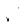
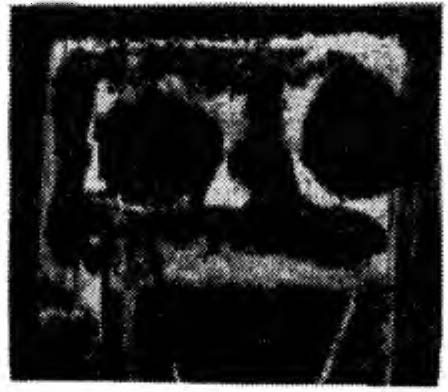
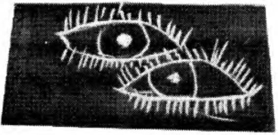

çakışıyormuş. H ermelinda'nın anlayışına göre, tüm bu noktalar dünyevi bedenimizde yer almıyorlardı, ancak Juan Turna, saydam bedenin hayli büyük olduğunu düşünecek olurs ak, bazı noktaların dünyevi bedenimizden yaklaşık bir metre ötede yer aldığını belirtti. Bir anlamda bu noktalar bedenim izin dışındalarmış, ancak yine de değillermiş; saydam varl ığımızın etrafında yer alıyorlar, ancak toplam bedenimizin bir bölümünü oluştu ruyorlarmış. Bu noktaların en önemlisi,
k arın bölgesinden yaklaşık 30 santimetre ötesinde, düz bi
çimde i leriye doğru uzandığı varsayılan sanal bir hattın sa
ğında yer alıyormuş. Juan Turna b izlere bunun, ikinci dikkatin toplandığı merkez olduğunu, avuçlarımızla hafifçe havaya vurarak bu noktayı yönlendirebileceğimizi anlattı. Juan Tuma'yı dinleyemeye daldığımda öfkemi unuttum.
Don Juan'ın dünyasıyla bir sonraki karşılaşmam batıda
oldu. B atıyla ilk temasımın son derece önemli bir olay oldu
ğu, bu karşılaşmanın bir şekilde daha sonra neler yapacağım
konusunda alacağım kararları etkileyeceği konusunda don
Juan beni uyardı. Ayrıca bu olayın, bu denli katı davrandı
ğım ve kendime böylesine önem verdiğim için özell ikle
önemli bir sınav olacağını da belirtti. Doğal olarak batıya ak
şam alacakaranlığında yaklaşıldığını; günün bu saatinin zor
bir saat olduğunu, batıdaki savaşçılarının çok güçlü, cesur ve
büsbütün çılgın olduklarını söyledi. Ayrıca, onun bir diğer
savaşçısını, perde arkasındaki adamı tanıyacaktım. Don Juaıı
son derece temkinli ve sabırl ı davranmam gerektiği konusunda beni uyardı; kadınlar yalnızca vahşi birer çılgın ol
NAGUAL'IN SAVAŞÇI TOPLU LUÔ U
22 1
makla kalmıyorlar; aynı zamanda hem onl ar, h em de adamlar onun tanıdığı en güçlü sava�ç ılar gru bunu oluşturuyorlarmış. İnancına göre bunlar, i k i nc i d ikkatin en usta insanları ydılar.
B i r gün, birdenbire, bat ı l ı kadınları z iyaret etme zamanının geldiğini söyled i . Kuze y Meksi k a ' el a bir kente doğru yol
aldık. Tam gün batımında, don Juan bana kentin eteklerinde
büyük, ı ş ı ksız bir evin önünde durınaın ı söyled i . A rabadan
indik ve ana kapıya doğru yürüdük. Don J uan kapıya b irkaç
kez v urdu. Yanıt yoktu. Oraya y an l ı� bir zamanda gelmiş o l duğumuzu düşündüm. Ev boş görünüyordu.
Don J uan yoru l u ncaya değ i n kapı yı çalmayı sürdürdü .
Daha sonra bana kapıya vurmam i ç i n i�aret verd i . H i <,; durmadan kapıya v u rmaya devam etmem i , z i ra içerdek i lerin
ağır işi tt iklerin i söyled i . Daha sonra ya da ertesi gün tekrar
uğramanın daha i y i olup olmayacağırn sordum. Bana kapıya
sertçe vurmayı sürdürmemi söyled i .
Sonsuz g i b i gelen b i r bekleyişten sonr a , kapı yavaşça
açı l d ı . Tuh af görünüşlü b i r kadın kapıdan baş ını d ı şarı çıkarttı ve kapıyı kırmak ya da komşuları ve onları n köpeklerini öfkelendirmek gibi bir niyetim m i olduğunu sordu.
Don Juan bir şey söylemek üzere öne doğru bir adı nı attı. K adın dışarı çıktı ve şiddetle onu yana doğru itti. Parma
ğ ı n ı bana doğru sall ayarak bağınn aya baş l adı ve dünyanın
sah i b i y m i ş i m g i b i , d ü nyada k e n d i m de n başka h i ç k i m s e
yokmuş g ib i g i b i davrandığımı söyl e d i . Söyledikleri ne karşı
çıktım ve yalnızca don Juan ' ın bana söyled iklerini yerine getirdiğimi belirttim. Kadın don J u an ' ın bana kapıyı kırm am ı
d a söyleyip söylenmediğini sord u . Don Ju an ara y a g irmeye
çalışt ı , ancak kadın onu bir kez daha itti .
Kadın yataktan yeni kalkm ı ş g i b i görünüyordu. Ü stü b a
ş ı darmadağı nd ı . Büyük olas ı l ı k l a kapı nın sesine uyanmıştı,
üzerindeki giysiyi de kirli sepetinden alırn � olm al ı y d ı . Ayakları ç ı plaktı , beyazlanmaya yLiz tutan sa\ları korkun\ derecede bak ı ms ızdı. Boııcuk g i b i , k ı rm ı z ı 12özkri v ardı . Ev kadıııı
222
KARTAL'TN ARMAGANI
gibi görünüyordu, ancak kendine has bir çekiciliği vardı :
uzun boylu sayılırdı, yaklaşık bir yetmiş boyundaydı, esmerd i ve olağan üstü adaleliydi; çıpl ak kollarının üzerinde bo
ğum boğum adeleler görünüyordu. Kalçaları güzel ve çekiciydi.
Tepeden bakan bir ifadeyle beni baştan aşağı süzdü ve
bağırarak henüz ondan özür d ilememiş olduğumu söyledi.
Don Juan, yüksek sesle ve açık bir biçimde özür dilemem
gerektiğini fısıldadı.
Don Juan ' ın söylediğini yaptığımda, kadın gülümsedi ve
don Juan ' a dönerek onu bir çocukmuş gibi kucakladı . Söylenerek kapıyı benim çalmama izin vermemiş olması gerekti
ğini zira elimin kapıya dokunuşunun çıkardığı sesin çok rahatsız edici olduğunu mırıldandı. Don Juan ' ı elinden tuttu ve
eşikten geçmesine yardım ederek evden içeri aldı. Ona "sevgili küçük ihtiyar" diyordu. Don Juan güldü. O korkunç karının saçmalıklarından zevk alıyormuş gibi davranması beni dehşete soktu. "Sevgili küçük ihtiyar"ını içeri aldıktan sonra
bana baktı ve bir köpeği kovuyormuş gibi eliyle uzaklaşmam ı işaret etti. Ş aşkınlığımı görünce güldü; dişleri kocaman,
çarpık çurpuk ve çok pisti. Daha sonra fikrin i değiştireli ve
içeri g irmemi söyledi.
Don Juan karanlık bir holün ucunda zorlukla ayrımsayabildiğim bir kapıya doğru i lerledi. Kadın nereye gittiğini bilmediğini söyleyerek onu azarladı. B iz i başka bir karanlık hole götürdü. Ev çok büyük görünüyordu ve içerde tek bir ışık yoktu. Kadın, çok geniş bir odanın kapısını açtı. Oda neredeyse bomboştu. Yalnızca ortasında iki eski koltuk vardı ve
tavandan, o güne eleğin gördüğüm en sönük ampul sallamyordu. Eski moda, uzun bir ampuldü bu.
Koltuklardan b irinde başka bir kadın oturuyordu. B irinci
kadın yerde bulunan ufak b ir hasırın üzerine oturdu ve başını
diğer koltuğa yasladı. Daha sonra dizlerini göğsüne yaslayarak tüm vücudunu sergiledi. Külodu yoktu. Aptallaşmış bir
şekilde bakakaldım.

NAGUAL' IN SAVAŞÇI TOPLULUGU
223
Kadın ç irki n , sert bir ses tonuyla bana neden v aj i nasına
baktı ğımı sordu. Onu yalanlamaktan başka söyl eyecek b i r
şey bulamadım. B an a vuracakmı ş g i b i ayağa kalkt ı . B enden,
ona aval aval baktı ğı m ı , z i ra o güne eleğin yaşamı mda h iç
v a j ina görmedi ğ i m i söyl ememi istedi . Son derece utanm ı ş ,
aynı zamanda ela böyle bir duru mda yakalandığım i ç in s i n i rlenmiştim.
Kadın don Juan ' a dönerek, avazı ç ıktığı k adar bağı rarak,
defalarca o güne eleğin b i r v aj ina görmediysem nasıl Nagual
olabi ldiğimi sordu . Odanın diğer tarafına koştu ve öteki kadının oturduğu koltuğun yanında durdu. K adıııı omuzları n dan sarsarak b e n i göstereli ve tüm yaşamında hiç vaj ina görmemiş bir adam olduğunu söyled i . Y üksek sesle gülerek benimle alay etti.
Utançtan yerin d i b i ne g irdi m . Beni düştüğüm bu küçültücü clunımclan kurtarması için don Juan ' m b i rşeyler yapımts ı gerekt i ğ i n i hissediyordum. B ana b u kadınl a rı n oldukça ç ılgın olduklarını söyledi ğ i n i anı m s ı yordu m . B u a ç ı k l a m a
yeters iz kalıyordu ; bu kadın gerçekten tımarhane l i k t i . Destek
ve tavsiye bekler g i b i don J u an ' a baktı m. B ak ı ş l arı n ı benden
kaç ırdı. S anırım, o ela benim g i b i ne y apacağını b ilemez halcleycl i , ancak sanki bir an yüzünde hınzırc a bir gülümseme
yakal adığımı h issettim, ancak süratle başını çev i rerek bunu
gizled i .
Kadın sırtüstü uzandı , eteğini yukarı çekti ve bana g i z l i
g i z l i bakacağıma can ımm isted i ğ i g i b i onu seyretmem i emret t i . Y ü z ü m ün k ı pk ı rm ı z ı olduğunu h i ssett i m , b a ş ı m a ve
boynum a ateş basm ı şt ı . Öylesine s i n irlenm iştim ki neredeyse
cleneti m i m i y i t ir i yordu m . K ad ın ı k afa s ın ı yakal a y ı p y e re
vunnak geld i içimden.
Koltukta oturan kad ı n yerinden kalktı v e öte k i kadını
saçlarından yakalayarak sanki h iç b i r gayret sarfctmcden tek
bir hareketle ayağa kaldırd ı . Yarı kapal ı gözlerle bana bakarak yüzünü aramızda beş altı santim kal ıncaya kadar yaklaştırdı . Ş aşırtıcı b i ç i mde ferahl atıcı bir kokusu vard ı .
224
KARTAL'IN ARMAGANI
Yüksek sesle, işe başlama zamanın ın geldiğini söyledi.
H er iki kadın da ampulün ışığının altında bana doğru yaklaştılar. B irbirlerine benzemiyorlardı. İkinci kadın daha yaşlıydı, ya da daha yaşlı görünüyordu ve yüzünü kaplayan kalın pudra tabakası ona bir soytarı görünümü veriyordu. Saçlarını
düzgün bir biçimde arkasında topuz yapmıştı. Oldukça sakin
görünüyordu, ancak alt dudağı ve çenesi sürekli titremekteydi.
Kadınların her ikisi de uzun boylu ve güçlü görünümlüydüler; tehdit edici bir biçimde tepemde durdular ve uzun
bir süre beni süzdüler. Don Juan kadınların sabitleşen dikkatlerini bozacak herhangi bir harekette bulunmaktan kaçındı.
Daha yaşlı olan kadın başını salladı, bunun üzerine don Juan
bana onun adının Zuleica olduğunu söyledi; o, rüya gijriicüynıüş. B ize kapıyı açan kadının adı Zoila'ymış ve o i: sürücüymüş.
Zuleica bana döndü ve papağanı andıran bir sesle daha
önce hiç vajina görmediğimin doğru olup olmadığını sordu.
Don Juan artık kendine hakim olamıyordu, gülmeye başladı.
Ona işaret ederek ne söylemem gerektiğini bilmediğimi belirttim. Kulağıma eğildi ve hiç vaj ina görmediğimi söylememin daha hayırlı olacağını fıs ıldadı; yoksa benden bir vajinayı betimlememi istermiş, Zuleica' nın benden bir sonraki isteği bu olacakmış.
Zuleica, böyle bir yanıt verdiğimde, benim adıma üzüldüğünü belirtti. Daha sonra da Zoila ' ya dönerek vajinasını
bana göstermesini söyledi. Zoila ampulün altına u zanarak
bacaklarını açtı.
Don Juan, bir yandan kahkahalarla gülüyor, bir yandan
da öksürüyordu. Beni bu tımarhaneden kurtarması için ona
yalvardım. Yen iden kulağıma eğilerek dikkatli ve ilgili oldu
ğumu gösterecek şekilde vaj inayı iyice incelememi, yoksa
alimallah dünyanın sonuna kadar orada kalabileceğimi fısıldadı.
Dikkatli ve ayrıntılı incelemelerimden sonra Zuleica ba-
NJ\GUAL' I N S AVAŞÇI TOPLULUÔU
225
na, bundan böyl e vaj i na uzmanı ol arak hava atab i leceği m i ve
eğer günün birinde külot g iymemh b i r kadın la kar� ı l a�acak
o lursam, art ı k bir v a_ı i na gördüğüme göre. falta�ı g i b i ;11; ı l m ı �
gözlerle kaba v e müstehcen bak ı � l arLı bakmaın ;ıyı öğrendi
ğimi söyled i .
Zulcica ç ı t çıkarmadan bizi i <,; a v l u ya giitii rdii . Orada birinin beni bek l emekte olduğunu söyled i . İç· a v l u z i firi karanl ık t ı . Diğer i nsanl ar ın s i lüetlerini zorl u k l a anımsayab i l i yordum. Daha sonra. b i rkaç metre ötede ayakta d u ran bir adamın koyu renk gölgesini fark ettim. B edenim gayri ihtiyari sars ı l d ı .
Don J u a n adam l a ç o k a l ç «tk b i r .�e s l e k o n u � arak be n i
kendi s i yl e tanı�tırm ak i ç i n get i rd i ğ i n i söyled i . A d aııı;ı beıı i ın
a d ı m ı s öy l e d i . B i r a n l ı k ses s i z l i kten sonra d on J u a n bana
adamın adııııı ı S i l v i o Man uel olduğunu. kendi s i n i n kara n l ı
ğm sav a�çı s ı, ti.i m sav a�ç ı top! u 1 uğ u ıı u ıı 1 ide ri o 1 d u ğ u ıı u
aç!kladı. Daha sonra S i l v io Manucl beııiıı ı le konuştu . Konuşma bozukluğu çek t i ğ i n i cli.i �ündüııı-sc s i zor i � i t i l iyord u ve
sözcük ler ağzından öksürük g i bi ç ı k ı yord u .
Daha yakına gelmeıııi emrett i . Ona yaklaşmaya çal ıştı
ğ ımda, sank i havada si.izül i.i yorı n u ? g i b i geri çek i l d i . H iç ses
çıkartmadan geriye doğru y ü rüyorıııu� g i b i beni bir saloııuıı
daha ela k aran l ı k köşelerine doğru ç -c k t i . A n l ayamad ı ğ ı m bir
şeyler mırıldandı . Konuşmaya n i yetlendim ama boğazı m ı n
ka�ınd ı ğ ı nı ve k a v ru l duğunu hissettim. İ k i ü ç kez bana b i r
şeyler söyled i ; e n sonunda soyunnı aı ı ı ı emret t i ğ i q i a n l ayab i l dim. Sesinde v e o n u çevre leyen karan l ı kta beni e l ine geçiren
hir güç vard ı . Em rine karşı ge l e m i yord u m . Ü ze r i m dek i leri
1,; ıkartarak kork u ve soğuğun et k i s i y l"e t i t re ye rek karş ı s ın da
ı;ırılçıplak durd u m .
Etraf öylesine k ara l ı kt ı k i, d o n J uan ve i k i k ad ı nı n y a k ı
ı ı ı mızda olup olmadık l arın ı göremiyordum. Yak ı n ı mda, birk aç metre ötede alçak ses l i kes i n t i s iz b i r lı ı � ı rt ı d u y u yordum;
daha sonra serin b i r rüzgarın estiğ i n i hi ssettim . S i l v io Manu
L·l ' in soluğunu t ü m bedenimde duyuyord u m .

226
KARTAL'IN ARMAGANI
Daha sonra bana giysilerimin üzerine oturmamı ve ka
ranlığın içinde kolayca ayrımına vardığım aydınlık bir noktaya bakmamı söyledi. B ana saatler gibi gelen bir süre boyunca ışığa baktım, ta ki aydınlık noktanın Silvio Manuel ' i ı ı sol gözü olduğunu fark edinceye kadar, O anda, onun tüıı ı
yüzünün ve bedeninin hatlarını ayrımsayabildim. Salon ilk
göründüğü kadar karanlık değildi. Silvio Manucl bana yak
!aştı ve ayağa kalkmama yardım etti. Karanlığın içinde böy
lesine net bir biçimde görebilmek beni coşkulandırdı. İk i ka
dının beni seyrettiklerini gördüğüm halde çıplak olmamdaıı
rahatsızlık duymadım. Anlaşılan kadınlar da karanlıkta göre
biliyorlardı; beni izlemeye koyulmuşlardı. Donumu giymek
istedim, ancak Zuleica benden erken davranarak donumıı
elimden çekip aldı.
İki kadın ve Silvio Manuel uzun süre beni seyrettilcı
Daha sonra don Juan k aranlığın içinden gelerek bana ayak
kabılarımı verdi. Ardından, Zoila ağaçların çevrelediği açı k
bir avluya doğru bize yol gösterdi. Avlunun ortasında ayakLı
duran bir kadının silüetini ayrımsadım. Don Juan onunla ku
nuştu ve k adın ona bir şeyler m ırıldandı . Don Juan baıı;ı
onun güneyden geldiğini, adının M arta olduğunu ve bat ı l ı
kadınların habercisi olduğunu söyledi. Marta, beni m dalı:ı
önce çıplak olarak hiçbir kadınla tanıştırılmadığıma baJıs,
girebileceğini; usul en, kişinin önce tanışıp, daha sonra sı >
yunmasının gerektiğini belirtti. Yüksek sesle güldü. Gül li�ıı
öylesine hoş, öylesine canlı ve gençlik doluydu ki, karanl ı r ı
v e sessizliği içinde tüm evin içinde yankılandı durdu. Baıı;ı
destek olması için gözlerim don Juan'ı aradı. Ancak Silv i ı ı
Manuel ' le birlikte ortadan kaybolmuşlardı. Üç kadınla b i ı
l ikte yalnız kalmıştım. B irdenbire gerginleştim v e Marta ' v:ı
don Juan ' ın nereye gittiğini bilip bilmediğini sordum. Taı ı ı "
anda biri beni koltuk altlarımdan yakaladı. Acı içinde l ı ı ı
çığlık attım. B u kişinin S ilvio Manuel olduğunu anlarnı�t ı ı ı ı
Hiç ağırlığım yokmuş gibi beni havaya kaldırdı ve silkelcv\·
rek ayağımda ayakkabılarımı düşürdü. Daha sonra beni d ı ı
NAGUAL' IN SAVAŞÇI TOPLULUGU
227
!erime kadar buz gibi su dolu bir fıçının içine ayakta duracak
biçimde yerleştirdi.
Fıç ınm içinde uzun bir süre durdum, bu arada herkes
dikkatle beni izliyordu . Daha sonra Silvio Manuel beni bir
kez daha yerimden kaldırarak birinin dikkatle fıçının kenarına yerleştirdiği ayakkabılarımın yarnna taşıdı.
Don Juan bir kez daha karanlığın içinden geldi ve bana
giysilerimi uzattı. Giyinmem i ve nezaketen bir süre orada
kalmamı fısı ldadı . Marta kurulanınaın iç in bana bir havl u
verdi. Gözlerim iki kadını v e Silvio Manucl ' i aradı ama görünürde kimseler yoktu.
Marta, Don Juan ve ben, uzun bir süre karanlıkta dikildik ve konuştuk. M arta görünürde don Juan' a bir şeyler anlatıyordu, ancak bana öyle geliyordu ki asl ında bana sesleniyordu. Ayrılmak için don Juan 'dan bir işaret bekledim, ancak o, M arta ' nın ateşli konuşmasını dinlcmeğe dalıp gitmiş gibi
görünüyordu. Marta don Juan 'a Zoila'yla Zuleica 'nın o gün
çılgı nlıklarının doruğunda olduk larırn anl atıyordu. Daha
sonra beni aydınlatmak için onların çoğunlukla son derece
mantıklı davrandıklarını ekledi.
B ir sırrı açıklar gibi, Marta 'nın saçırnn böylesine clağı
ııık durmasının esas nedeninin, saç ların en azmdan üçte birinin Zuleic a ' n ı n saçı olması ndan kaynak landığını söyledi.
Olay şöyle olmuş: İki kadın birbirlerinin saçlarını tarıyorlar
ıııış. Zuleica, daha ·önce yüzlerce kez yaptığı gibi Zuleica 'nm
saçını örmüş , ancak bu kez, kontrolünü y itirmiş ve kendi
saçlarının bir bölümünü de Zoila'nın saçlarıyla birlikte ör
ı ı ıüş. Marta 'nın söylediğine göre ayağa kalkıp koltuklarına
doğru yürümek istediklerinde kıyamet kopmuş. Onlara yardıma koşmuş. O sırada, Zuleica Zoila 'nın saçlarının kendi
.,açl arı arasında örü lmüş olan bölümünü makasla kesmeye
karar vermiş. Ancak bunu izleyen itişmeler arasmda yanlışlıkla kendi saçını kesmiş.
Don Juan, duyduğu en komik şeymiş gibi kahkahalarla
ı·ıilüyordu. Avlunun uzak köşesinden yumuşak, öksürüğü an-
228
KARTAL'lN ARMAÔANI
dıran kahkahalar duydum.
Marta, Zuleica' nı n yeniden uzayıncaya kadar saçlarını
arkada topuz yapmak zorunda kaldığını ekledi.
Don Juan' la birlikte ben de güldüm. Marta ' yı sevmiştim. Diğer iki kadındansa nefret etmiştim. Beni tiksindiriyorlardı. Oysa Marta, dingin ve sessiz amaçlılığın kusursuz bir örneği g ibiyd i . Yüz hatlarını ayrımsayanı ıyordunı , ancak
onun son derece güzel olduğunu düşlüyordum. Sesinin b(iyüleyici bir tınısı vardı.
Çok kibar bir biçimde don Juan 'a bir şeyler yemek istl'yip istemediğimi sordu. Don Juan benim Zu leica ve Zoila'nın yanında kendimi pek rahat hissetmediğimi, ınideın i ı ı bulanmış olabileceğini söyledi. Marta, iki kadının artık orad:ı
olmadıkları konusunda bana güvence verdi ve bizi karanlık
bir holden geçirerek çok iyi aydınlatılmış bir mutfağa getirdi. B u zıtlık gözlerim için çok fazlaydı. Kapının qiğindl'
durdum ve gözlerimin ışığa alışmasını bekledim.
Mutfağın çok yüksek bir tavanı vardı ve oldukça mo
dern, donanımlı görünüyordu. Mutfağın bir tür yemek odasına benzeyen bölümünde oturduk. Marta, genç ve çok gü�· lüydii; vücut hatları dolgun v e çekiciyd i, yuvarlak bir yi.izti .
küçük bir ağzı ve burnu vardı . S imsiyah saçlarını örrni.iş w
başının etrafına dolamıştı.
Sanırım, ben onu nasıl büyük bir merakla izliyorsam, ı ı
da beni aynı ilgiyle izlemekteydi. Oturup yemek yedik \il'
konuştuk. Beni gerçekten büyülemişti. Eğitimli değildi, aıı
cak konuşmalarıyla beni tam anlamıyla etkisi altına aldı . Zu
ila'yla Zuleica'nın çılgınlık anlarında yaptıkları akla hayak
s ığmaz şeyleri anlattı.
Oradan ayrıl ıp yola koyulduğumuzda don Juan, M;ıı
ta'ya duyduğu hayranlıktan söz ederek, Marta'nın kararl ı l ı
ğın bir insanı nas ı l etkilediğ inin belki de en iyi örneğ i ı ı ı
oluşturduğunu belirtti. M arta, ödün vermez bir amaçlılı� ı ı ı
dışında hiçbir deneyiminin y a d a hazırlığının bulunmaması
na karşın, Zoi l a, Zulcica ve S ilvio Manuel ' in hakırnmı üsı
NAG U AL' I N SAVAŞÇI TOPL U L UG U
229
lenmek g i b i akl a gelebil ecek e n çetin görevi başarı y l a üstlenebilmiş.
Don Juan ' a S i lvio M anuel ' in neden kend i s i n i ışıkta görmeme i z i n vermediğini sordum . B ana karanl ığı n S ilvio Manuel 'in esas unsuru olduğu , i l eride onu görmek için sayısız fırsatımın bulun acağı yanıtını verd i . Bununla birlikte ilk kar
ş ı l aşmamızda, kend i s i n i erk i n i n , yani gecen in kara n l ı ğ ı n ın
sını rları içinde muhafaza etmesi n i n zoru n l u olduğunu v urgul adı . S i lv i o Manuel ' le i k i kadın b i rl ikte oturuyorlard ı , zira
birl ikte müthiş bir büyücü ekibi oluşturuyorlardı.
Don J u an bana bat ı l ı kad ın lar hakkındaki hükümlerimde
acelec i davranm amam gerektiğini söyled i . Onlarla, kontrolden çıktıkl arı bir anda karş ılaşmıştım, ancak bu deneti ms izl ik , yalnızca görünüşteymi ş . A s l ın da, içlerinde hiç değişmeyen bir öz v arm ı ş ; bu neden le, e n ç ı l g ın anları nda bile, bu çılgın l ık lar bir başkası tarafı ndan sahnelenen bir perform ansmış gibi. kendi sapkınlıkları na güleb i l i yorlarnı ı ş .
S i l v i o M an ue l ' in duru muysa fark l ı y m ı ş . O , kes i n l i k l e
del i değ i l m i ş ; bu i k i kadı n l a böylesine başarı l ı b iç imde baş
ede b i lmes i n i n en büyük nedeni , onun sah ip olduğu derin b i l i nç l i l ikmiş, o ve diğer i k i kadı n iki z ı t kutbu tems i l etmekteymiş. Don Juan, S i l v i o M anuel ' i n yapı s ı n ın doğuştan böyle olduğunu ve çevres inde bulunan herkesin onun bu ayrı calığını n farkında olduğunu be l i rtti. D iğerlerine karşı son derece katı ve hoşgörüsüz davranan velinimeti b i le , S i l v i o Manuel 'e büyük i l g i gösterirmi ş . B u te rc i h i n gerçek nede n i n i anl ayabi lmek don J uan ' ı n y ı l l arı nı a l m ı ş . Doğas ı n d a var o l an açı k l anamaz bir öze l l iğ i yüzünden, S i l vio M anuel bir kez sol
yanının b i l inc i ne daldığında bir daha bu duru mdan çıkmıyormuş. Yüksek b i l i nç duru mu nda kalmaya duyduğu güç l ü eğil im l e , v e l in i me t i n i n üstün l i derl ik n itel ikleriyle b i rleşmes i , onun yal nızca kuralın b i r y o l göste rici olduğu ve gerçekte
farkl ı bir b i linç düzlemi n i n daha bul unduğu sonucunu değ i l ,
aynı zamanda b i l incin diğer dü nyasma v aran gerçek geç i d i
d e h erkesten önce kavrayabilmes i n i sağl am ı ş . D o n J u a n S il -
230
KARTAL'IN ARMAGANI
vio M anuel 'in en kusursuz bir biçimde elde ettiği büyük ba
şarıları ortak amaçlarının hizmetine sunarak dengeleyebildi
ğini söyledi. S ilvio M anuel, don Juan 'ın arkasın daki gizli
güç olmuş.
Don Juan'ın savaşçılarıyla son karşılaşmam kuzeyde oldu. Don Juan bu topl antıyı gerçekleştirmek üzere beni Guadalajara şehrine götürdü. Buluşmamızın şehir merkezine oldukça yakın bir yerde, öğle vakti olacağını söyledi, zira kuzey, gün ortasıydı. Otelden saat 1 1 civarı ayrıldık ve şehir merkezine doğru kısa bir yürüyüş yaptık.
Nereye gittiğime dikkat etmeden yürümeye koyuldum.
Buluşma konusunda kara kara düşünerek yürüyordum ki, bir
mağazadan aceleyle çıkan bir kadınla çarpıştım. Elinde taşıdığı paketler yere düştü ve dağıldı. Özür dileyerek paketleri
toplamasına yardım ettim. Don Juan, geç kalacağımızı söyleyerek acele etmem konusunda beni uyardı. Kadın çok şaşırmış görünüyordu. Kolundan tuttum. Yaklaşık altmış yaşlarında, çok ince yapılı, uzun boylu bir kadındı ve çok şık giyinmişti. Oldukça şık bir görünüşü vardı. Son derece kibar davrandı ve suçun kendisinde olduğunu, uşağını aradığını,
bu nedenle dikkatinin dağıldığını söyledi. Kalabalığın içinde
uşağını bulabilmek için kendisine yardım edip etmeyeceğimi
sordu. Don Juan ' a döndüm ; kadını az daha öldüreceğimi, bu
nedenle en azından ona yardım etmem gerektiğini söyledi.
Elinden paketleri aldım ve mağazaya geri döndük. Bira1.
ötemizde, oralı olmadığı aşikar, kaybolmuş bakışlarla çevre
:;ine bakan bir Kızılderi l i gördüm . Bayan onu çağırdığımb
kJybohnuş bir köpek yavrusu gibi yanına geldi. Ellerini ya
layacakmış gibi görünüyordu.
Don Juan dışarda bizi bekliyordu. Bayana acele etmemiz gerektiğini belirtti ve daha sonra da ona adımı söyledi .
Kadın k ibar bir b iç imde güldü v e elimi sıktı. Gençliğirnk
herhalde bir afetti diye düşündüm; zira hala çok güzel Vl'
alımlıydı.

NAGUAL'IN SAVAŞÇI TOPLULUÔU
23 1
Don Juan birdenbire bana döndü ve adının Nelida oldu
ğunu, kuzeyden geldiğini, ve bir rüya gijrücü olduğunu söyledi. Daha sonra beni kadının uşağı ile tantştırdt; adı Genaro
Flores'di, kendisi eylem adamı, topluluğun eylemlerinin gerisindeki savaşçı ydı. İ yice afallamıştım. Üçü birden kasıla
kasıla gülmeye başladılar; şaşkınlığtm arttıkça daha çok eğleniyor görünüyorlardı.
Don Genaro biraz ötede bulunan bir grup çocuğun yanına giderek paketleri onlara verdi ve onlara, biraz önce konu
şurken gördükleri bayanın kendisinin patronu olduğunu, bu
p aketleri onlara hediye olarak aldığını, zira bugün canını n
bir iyilik yapmak istediğini söyledi. Daha sonra konuşmadan
yarım blok kadar yürüdük. Dilim tutulmuştu. Birdenbire Nelinda eliyle mağazayı gösterdi ve bizden çok kısa bir süre
onu beklememizi, kendisi için ayırdıkları bir kutu naylon çorabı alması gerektiğini söyledi. B i r an gülerek bana baktı ,
gözleri parl ıyordu; bana, şaka bir yana, büyücü olsa da olmasa da, her zaman naylon çorap ve dantel külot giydiğini söyledi. Don Juan ve Genaro, iki budala gibi kahakalar attı lar.
Nelincla 'ya bakakaldım, zira elimden başka bir şey gelmiyordu. Onda, aynı anda hem son derece dünyevi, hem ele bu
dünyaya ait olmayan bir şeyler vardı sanki.
Şakacı bir tonl a don Juan ' a bana göz kulak olmasını , zira düşüp bayılmak üzere olduğumu söyledi. Daha sonra nazik bir tavırla don Genaro 'ya dönerek içeri girip tezgahtardan siparişini alması nı rica etti. Don Genaro tanı içeri g iriyordu ki, Nelinda fikrini değiştirnı i� g ibi onu geri çağırd t ; ancak, don Gcnaro onu duymadı v e içeri girerek gözden
kayboldu. Nelinda, izin isteyerek, don Genaro' mın peş inden
dükkana daldı.
Don Juan eliyle sırtıma bastırarak beni düştüğüm sıkın tıdan kurtardı. Bana, adı Florinda olan diğer kuzeyl i kadınla
başka bir zaman, tek başına tanışacağımı, zira onun farklı bir
ruh durumuyla bağlantımı sağlayacağını bel irtti. Söylediğine
göre, Florinda'yla Nelinda birbirlerinin birer kopyasıydılar.


232
KARTAL'IN ARMAGANI
Nelinda öylesine ince zevkli, öylesine zarif görünüyordı ı
k i , onu bir moda dergisinin sayfaları arasında düşleyebiliyor
dum. Bu denli güzel ve zarif olması- Fransız ya da Kuzey
İtalya kökenli olabil irdi-beni şaşkına çevirmişti. Gerçi Vi
cente de Kızılderili asıllı değildi, ancak kırsal kökenli olu�ı ı
onu daha sıradan b i r konuma yerleştiriyordu. Don Juan · : ı
dünyasında Kızılderili kökenli olmayan kişilerin neden hu
lunduğunu sordum. Bir N agual ' ın topluluğunda yer alan s:ı
vaşçıları seçen unsurun erk olduğunu, erkin neler tasarladığı
nı bilebilmenin olanak dışı olduğunu belirtti.
Mağazanın önünde yaklaşık yarım saat bekledik. Doı ı
Juan sabırsızlanıyormuş gibi davrandı ve benden içeri girL·
rek onlara acele etmelerini söylememi isted i. Mağazad�ı ı ı
içeri girdim. İçerisi fazla geniş değildi ve arka kapı yoktı ı .
ancak görünürlerde hiç kimse yoktu. Tezgahtarlara onlaıı
sordum, ancak kimsenin haberi yoktu.
Don Juan 'la yüz yüze geldim, neler olduğunu sorduııı
Bana onların ya yer yarılıp içine girdiklerini, ya da tam sırt ı
m ı kütürdettiği sırada oradan gizlice sıvışmq oldukl arı ı ı ı
söyledi.
Öfke iç inde ona tüm adamlarının hilekar olclukları ı ı ı
söyledim. Gözlerinden yaşlar boşanı ncaya kadar güldü. Bl'
nim tam bir enayi olduğumu söyledi. Kendime böylesiııc·
önemsiyor olmam , beni tam bir maskara durumuna düşürii
yordu. Öfkeli halime öylesine gülüyordu ki, duvara yaslaıı
mak zorunda kaldı.
La Gorda bana don Juan ' ın topluluğunun üyeleriyle i l k
kez karşılaşmasını anlatmıştı. Onun anlattıkları d a biçim ol:ı
rak aynıydı, yalnız içerik farklıydı. Savaşç ılar ona karşı belk ı
biraz daha sert davranmışlar, ancak la Gorda, onların bu ta\
rının nedenini, uykusundan uyandırmak için kendisini saı '
ma girişimi ve aynı zamanda da, kendisinin ki�iliğinin çirl-; i ı ı
yüzü olarak tanımladığı bölümüne kaqı doğal bir tepki bi\. ı
minde yorumlamış.
NAGUAL' IN S AVAŞÇI TOPLULUÔU
233
Don J uan ' ın dünyası nı inceled i ğ i m i zde, bunun gerçekte
v e l i n imetinin dü nyasın ı n bir sureti olduğunun ayrı m ı na v ardık. Çq i t l i g ru p l ardan ya da e v le rden o l u�tuğu söylenebil i rd i . B i rb i ri nden bağı m s ı z görü n ü rde k ı z k arclq dört ç ifti n olu�turduğu bir gru p b u l u n u yordu : b u ç i ftler birl i kte çal ı ş ıyorl ar, b i rl ik te ya�ıyorl ard ı : d iğer grupta üç adam vard ı : bunl ar yaşça don J u a n ' 1 11 akranıydılar ve ona o ldukça yakındı lar: onl ardan b i raz daha genç i k i adam ı n , Eın i l i to v e J u an Tum a ' n ın olu�turduğu b i r gru p daha vardı ve son ularak da, görünürde birbiriyle akraba daha gen�· i k i güney l i kad ı n , Marta i l e Teresa ' nı ıı o l u � t urduğu bir e k i p b u l un u yord u . Ra�ka b i r
açıdan bakıldığında bu topl u l u ğ u n . M e k s i ka ' n ı n b i rbiri nden
oldukça uzak fark l ı bölgelerinde yer a la n dört evden o lu�tu
ğ u söyleneb i l i rd i . B un l arın birinc i s i , i k i batı l ı k ad ı n Zuleica
ile Zoi l a, S i l v io M anuel ve haberc i M arta ' dan o l u� uyord u .
İkinc i s i , g ü ney l i kad ın lar Ccc i l ia ve Dc l i a , d o n J u an ' ı n h aberc i s i E m i l i t o ' y l a h aberc i Teresa' daıı ol u� uyordu. B i r d iğer ev, doğul u kad ı n l ar Carıne l a ' y l a Hcrme l inda, Vicentc ve haberci Juan Tu m a ' dan o l u�uyord u : son ol arak da, kuze y l i k adınl ar, Nel i nda i l e Flor i n d a ve don Genaro bulu nuyordu.
Don J uan ' a göre, kendi dünyas ı , vel i nimet i n i n dünyasın ın sah i p olduğu uyum ve huzurdan yoksundu. B i rbi ri n i ger
çek anl amda dengeleye n , ve b i rbiri n i n t ı patıp q i olan i k i kad ı n , y a l n ı z c a k uzey l i sava�ç ı lar, N c l i n d a ' y l a Flor i nda ' y d ı .
Günde l i k koııu�mal arı nı ızın birinde Nel iııda, b i rb i rlerine aynı kan gru buna s ah i p ol acak ölçüde benzed i k leri n i bel irtm i�ti.
Bana göre. etki lqim leri m i z i n neden olduğu sürprizlerin
arasında en ho�uma gideni, ilk kar� ı l a � t ı ğ ı nıda bana son derece i t i c i görünen Z u l e ica ' yl a Zoi l a ' n ı ı ı dönü�ümü olımı�tu.
Don J u a n ' ı n bel i rt t i ğ i gibi. en c iddi ve ç a l ı � ka n sava�ç ı l a r
hal ine ge l m i � l e rd i . Onl arı b i r dahak i görü � ü nı dc g öz l erime
i n anama d ı m . Ç ı l g ın l ı k k ri zl e ri geç m i � t i ve �imdi kar� ı nı d a
i y i g i y im l i , uzun boyl u , sağlam yapı l ı , parlak s i y a h ta�l ara
benzeyen gözleriyle i k i Meks i k a l ı bayan duruyord u . G ü l e -

234
KARTAL'IN ARMAGANI
rek, sanki başka insanlarmış ve hiçbir ilgileri yokmuş gibi o
gece olup bitenlerden söz ettiler. Don Juan' ın kendi velinimetinin topluluğunda bulunan batılı kadınlarla karşılaştığında yaşamış olduğu sıkıntıyı şimdi anlayabiliyordum. Zuleica 'yla Zoila'nın onlarla ilk kez karşılaştığımda gördüğüm sevimsiz, tiksinti verici yaratıklara dönüşebileceklerini kabullenebilmem, bana olanaksız gibi geliyordu. B ir çok kez
geçirdikleri dönüşüme tanık oldum, ancak bir daha hiçbir zaman onları ilk kez karşılaştığımda yargıladığım biçimde yargılamadım. Her şeyden fazla beni üzen, onların öfke krizleri olmuştu .
Ancak, bana e n büyük sürprizi yapan Silvio Manuel oldu. Karanlığın içinde onunla ilk tanışmamızda, bana buyurgan bir adam, insanı ezip geçen bir dev gibi görünmüştü.
Oysa, ufak tefekti, ancak zayıf, çelimsiz biri değildi. Bedeni,
bir binicinin bedenine benziyordu-kısa boylu, ancak kusursuz derecede biçimli. Bana bir sporcu gibi göründü. Bedeni
üzerinde öylesine usta bir denetimi vardı ki ki, kaslarını sıkarak bedenini, bir kurbağa gibi, olduğunun iki katı şişirebil iyordu. Hiç acı duymadan bedenindeki tüm eklemleri yerinden oynatıp, yeniden yerleştirebiliyordu. S ilvio M anuel 'e baktığımda her zaman derin ve bana yabancı gelen bir korkuya kapıldığımı hissetmişimdir. B ana farklı bir zamandan
günümüze gelen bir ziyaretçi gibi görünmüştü. Solgun, ama
esmer, bronz bir heykele benzeyen bir yapısı vardı. Keskin
yüz hatları, kartal gagasına benzeyen kemerli burnu, dolgun
dudakları ve birbirinden uzak, çekik gözleri, ona bir Maya
freski üzerinde yer alan bir desen görünümü kazandırıyordu.
Gündüz boyunca tavırları sıcak ve dostçaydı, ancak hava kararır kararmaz akıl sır ermez bir değişime uğruyordu . Sesi
değişiyor, karanlık bir köşeye çekilerek, karanlığın içinde
kayboluyordu. B öyle anlarda yalnızca sol gözünü görebiliyordum; sol gözü açık kalırdı ve kedigillerden vahşi bir hayvanın gözü gibi tuhaf bir parıltıyla parlardı.
Don Juan ' ın savaşçılarıyla aramdaki ilişki sürecinde or-

NAGUAL'IN SAVAŞÇI TOPLULUGU
235
taya çıkan bir diğer husus da kontro//ii ( ı lgınlık konusuydu .
Don Juan bana bir zamanl ar, tüm savaşçı kadınların zoru n l u
olarak bölündükleri i k i k ategoride n , riiya giiriiciiler v e i z sürücülerden söz ederken bu konuyu kısaca açıklaınıştı. S öylediğine göre topluluğundaki tüm ü ye ler, günde l i k yaşantı larının bir bölümü olarak rüya görme ve iz siirnıe edimlerinde bulunurlard ı ; ancak, riiya gôrücüler gezegeniyle iz siiriiciiler
gezegenini oluşturan kadın lar kendi etkinl iklerinde özell ikle
ustal aşmı şlard ı .
İz sürücüler gündelik yaşamın esas yükünün taşıyıcılarıydıl ar. Onlar idareci , topluluğun insanlarla i l işki l erini sürdüren insanlardılar. G ündel ik yaşam dünyasına ilişkin şeyleri onlar denetliyordu. iz siiriiciilcr. kontrollii �·ılgınlı.�111 uygulayıcıl arıydı lar; rüwı giiriiciilcrin, rii_vo giirnıeni11 uygulayıcıları olmaları gibi. D iğer bir deyişle, kontrollü çılgın l ık, iz sürmenin temel ini oluşturu yord u , tıpkı düşlerin rüya görmenin temel in i oluşturduğu gibi. Don J u an ' ın söylediğine göre,
en genel anlamda, bir savaşçı nın ikinci dikkatte elde ettiği en
büyük başarı riiva gôrme, birinc i dikkat içinde e lde ettiği en
büyük başarıysa iz sürmeydi.
İl k buluşmamızda don Juan' ın savaşç ı l a rı n ı n bana olan
davranışl arın ı yanlış anlam ı ştım. Eylem leri n i . çeşitli d ü zenbazlı klar ol arak yoru m l aırn ş tım-eğer kontmllii �·ı lgınlı.�111
ne olduğunu öğre nmemi ş olsaydım, bugün b i l e izlenimim
aynı olurdu. Don Juan, savaşçı l arı n bana olan davranı ş ları nın
iz sürme konusunda verilen ustaca ders ler olduğunu bel irtti.
Söylediğine göre v e l in imeti ona her şeyden önce iz siirnıe
sanatın ı öğretmiş. Vel i n imetinin diğer savaşç ıl arı n ı n arasında
hayatta kalabilmek için bu sanatı hemen öğrenmesi gerekiyormuş. B e n im duru mumdaysa, be lirt tiğine göre, kendi başıma herhangi bir savaşım vermeyeceğime göre, ilk önce riiyu görmeyi öğrenmem gerekiyormuş. Zaman uygun olduğunda,
Florinda yanıma gelerek iz siirmrnin karmaşık süreçleri içinde bana yardımcı olacakm ı ş . B u konu üzerine benimle başka
hiç k imse konuşamayacakmış; bana ancak, ilk bul uşmamız-
236
KARTAL'IN ARMAÔANI
da da yaptıkları gibi yeteneklerini sergileyebilirlermiş.
Don Juan bana Florinda' nın iz sürmenin en önde gelen
uygulayıcılarından b iri olduğunu ayrıntılı bir biçimde açıkladı; kendisi, velinimeti ve onun her biri birer iz siiriicii olan
dört kadın savaşçısı tarafından en ince ayrıntılarına kadar iz
sürme sanatı üzerine eğitilmişler. Florinda, don Juan ' ın dünyasına giren ilk kadın savaşçıymış, bu yüzden de, yalnızca iz
sürme sanatında değil, aynı zamanda, eğer o noktaya ulaşabilirsem, üçüncü dikkatin gizemleri konusunda da benim kılavuzum olacakmış. Don Juan bu konu üzerinde ayrıntıl ara girişmedi. Bu konunun, benim önce iz siirme_vi daha sonra da
üçüncü dikkate girmeyi öğrenebilmeme kadar beklemesi gerektiğini belirtti.
Don Juan , velinimetinin iz sürme sanatmda ustalaşmaya
ilişkin her konuda gerek kendisine, gerekse diğer savaşçılara
fazlasıyla zaman ve dikkat ayırdığın ı açıkladı . Velinimeti,
kuralm öğretileriyle, gündel ik yaşam içinde diğer insanlarla
baş edebilmeleri için karmaşık düzenekler gel iştirmh. Kihirliliğin olmadığı bir durumda sosyal ortamda ayakta kalabilmenin tek yolunun kontrollü çılgınlık olduğuna onları inandırabilmeni n tek yolunun bu olduğuna inanıyormuş.
Hazırladığı düzenekleri uygulamak üzere velinimeti, ki
ş ilerin eylemleriyle savaşçıların eylemlerini, kuralı n buyruklarının karşısına yerleştirerek geri çekilip, doğal sonucu beklermiş. Sürecin doğal bir gelişimi olarak başlangıçta insanların çılgınlığı bir süre için başatlık kazanır, savaşçıları da pe
şinden sürüklermiş, ancak sonuçta kuralın daha kapsamlı tasarıları karşısında yenilgiye uğrarınış.
Don Juan bize, velinimetinin oyuncular üzerinde bu şek ilde bir baskı kurm asından başlangıçta hoşnutsuzluk duyduğunu söyledi. B unu velinimetinin yüzüne de söylemiş. Velinimeti buna şaşırmamış. Sahip olduğu denetimin yalnızca Kartal ' ın yarattığ ı bir yanılsamadan ibaret olduğunu belirtmiş. O, yalnızca kusursuz bir savaşçıyınış, ve eylemleri Kartal ' a yansıtabilmeye yönelik alçak gönüllü girişimlerrni�.
NAGUAL' IN SAVAŞÇI TOPLU LUÔU
237
Don Juan, velinimeti nin kendi tasarı m larını uygu layı�ında sahip olduğu gücün, K artal ' ın gerçek ve nihai olduğu, insan ların yaptık larını n da ç ı l g ın l ı ktan ba�ka bir anlama gelmediği gerçeği n i b i lmesinden kaynak landığ1111 be l i ri l i . Bunl a rı n ikisi birl q t i k lerinde /.:011ımllii rılgı11/ı/.: ortaya ç ı kıyormu� k i don Juan ' ı n velinimeti /.:onımllii vlgı11/ı,�ı sıradan insanların çılgı nl ığı ile Kartal ' ı n öğreti lerinin kes i n l iği arasındak i tek köprü olarak t an ıml ıyordu .
NAGUAL KADIN
Don de Juan,
Flor arı
inda ndırı
' ya lmak
benz üzere
eyen ,
ve hem
en
ba
iyi tılı
i:
kadın
siiriicii la
ol rın,
arak hem
kendisine bu sanatın inceliklerini öğreten kuzeyli kadının gözetimine verilmiş. Kuzeyli kadın ve velinimeti ona, kendi savaşçı topluluğunu oluşturacak olan üç erkek savaşçı, bir haberci ve dört kadın iz sürücüyü bulabilmesi için gerekli olanakları sağlamışlar.
Velinimetinin topluluğundaki sekiz kadın görücü, saydam üyelerin arayışına girmişler ve don Juan ' ın topluluğu
için uygun erkek ve kadın savaşçıları bulmakta zorlanmamışlar. Bununla birlikte velinimeti, buldukları savaşçı ları bir
araya getirmek konusunda görücülerin çaba harcamasına
izin vermemiş. İz sürme ilkelerini uygulamak ve bu kişileri
birer savaşçı haline getirebilme görevi don Juan 'a verilmiş.
Ortaya çıkan ilk savaşçı Vicente olmuş. Don Juan iz sürme sanatında onu yetiştirecek kadar becerik! i değilmiş. O
yüzden, velinimeti ve kuzeyli iz sürücü bu görevin büyük bir
240
KARTAL'IN ARMAGANI
bölümünü üstlenmiş. Daha sonra s ırasıyla, S ilvio ManueL
don Gcnaro ve son olarak da haberci Emilito gelmiş.
Florinda, ilk kadın savaşçı olmuş. Onu Zoila, Delia ve
daha sonra da Carmela izlemiş. Don Juan, velinimetinin savaşçıların dünyayla ilişki lerini yalnızca kontrollü çılgınlık
koşullarında sürdürmelerini sıkı sıkıya tembihlemiş. B unun
sonucunda en karmaşık planları düşünüp uygulama becerisine sahip, akıl l ara durgunluk veren bir uygulamacılar ekibi
oluşmuş.
İz sürme sanatı üzerinde belli ölçüde yetkinlik kazandıktan sonra velinimetleri, onlar için bir Nagual kadın bulma
zamanının geldiğini anlamış. Herkesin kendi işini kendi görmes i gerektiği ilkesine sıkı sıkıya bağlı olan velinimeti, Nagual kadını onların dünyalarına getirmek için yalnızca toplulukta bulunan herkesin uzman iz siirüciiler olmalarını değil, aynı zam anda don Juan ' ın görmeyi öğrenmesini de beklemiş. Don Juan, bekleyişle harcanan zamana son derece üzülmüş olmakla birlikte, Nagual kadının bulunması için harcanan ortak çabanın topluluktaki savaşçılar arasında daha güçlü bir bağın oluşmasını sağl adığını da kabul ediyordu. Bu bağ, özgürlük arayışına olan bağlılıklarına yeni bir canlılık
kazandırmış.
Velinimetleri stratejisini uygulamaya koyulmuş ve önce
N agual kadını çekebilmek için aniden sofu bir Katolik olmuş. B ilgilerinin mirasçısı olarak don Juan ' elan, gerçek bir
evlat gibi davranmasını ve onunla birlikte kiliseye gitmesini
istemiş. Onu her gün yanına katıp ayine sürüklüyormuş. Don
Juan' ın belirttiğine göre, son derece cana yakın olan ve güzel konuşmasını bilen velinimeti, kilisede rastladığı herkese
onu, kırık çıkıkçılık yapan oğlu olarak tanıştırıyormuş.
Anlattığına göre, o güne değin yabani bir pagan oları
don Juan, kendisini, konuşmak ve kendisi hakkında bilgiler
vermek zorunda kaldığı bu tür sosyal ortamlarla karşı kar�ı ya kalmaktan ölümüne korkmuş. Ancak daha sonra, velinimetinin yaptığı her eylemin altında mutlaka bir neden bulu-
NAGUAL KADIN
24 1
nacağını düşünerek kendini rahatlatmış. Onu gözlemleye rek
bu nede nlerin neler olabileceği n i çı karsamaya çal ışmış. Vel i n imetinin yaptıkları tutarl ı ve içten görünüyorm uş. Örnek b i r
Kato l ik o l ar a k , i ns an l ar a ra s ı n d a g ü v e n uyand ı rı yormuş.
Öze l l ik l e de, ona hayl i saygı duyan, b i r dost ve sırdaş ol arak
gören bölge papaz ı n ı n gözünde. Don J u an ne yapacağı nı bilemez durumdaym ı ş . ıYel in i ın e t i n i n y a gerçekten inan arak
Katol ikl i ğ i seçmiş olabi leceğ i n i . y a da tümüyle ç ı l dı rm ı ş olduğunu düşünüyorırnış. O s ı ra l ar, bir savaşçının aklını h içbir
durumda yitirmeyeceğin i he ni.iz kavrayamamış.
Don Juan ' ın k i l iseye g itme konusundak i kayg ı ları , velin imetinin kend i s i n i tanıdığı k i ş ilerin kızları y l a tanı şt ırdığında ortadan kaybo l m u ş . Doğru s u bu hoşu ııa g i t m i ş , ancak kendini rahatsız h i ssetm iyor da değ i l m i ş . Don .l uan, v e l i n imetinin onun konuşma yetene k leri n i gel i ştirmek üzere ona
yardımcı olmaya çalıştığın ı düşünın ü ş . O, ne konuşkan. ne
de sevi m l i biriytn i'.j . oysa ve l ın i mı:ti bir Nagual ' ı n zoru n l u
olarak her i k i öze l l iğe d e s a h i p olm;ısı gerek t i ğ i n i siiylcrın iş.
B i r yıl boyunca hemen her gün kil i seye gittikten sonra,
bir pazar ayini sı rasında, don Juan kil iseye gid işleri n i n altında yatan nedeni keşfetmi ş . Vel i n imet i n i n tanıd ı k l arı n ı n birinin kızı olan Ol inda adlı bir kızın yanında çöme l m i ş . Aylar boyunca her gün görüşüyor olmanın verdiği al ışkanl ıkla, dönüp ona bakmış. Gözleri buluşmuş v e birdenbire don J uan
onu saydam b i r v arl ı k biçim inde giimıiiş. Ol inda, ç i ft bir kadııımış. Vel in i meti onu en baştan ber i tanıyorm uş v ı: don J u an ' ın onunla i l işki kurabilmesi i ç i n m ü m k ü n o l an en z o r yolu seçmiş. Don J uan, bizlere yaşadığı o anın tüm yaşam ı n ı n e n önem l i anları ndan b i ri olduğunu söylem işti.
Yel i n imeti, don J uan 'ı n giirdli,� iin ii b i l iyorm u ş . Onun
göre v i , ç ift varlıkları bir araya geti rmekmiş v e bunu k us ur s u z bir biçimde başarm ı ş . Ayağa kalkırn ş , k i l isen i n dört b i r
yanına göz gezdirm iş , daha sonra d a k a l k ı p arka.�ına bakmadan oradan ayrıl m ı ş . A rt ı k orada onun için yapacak faz l a bir
�ey kalmamı�.
242
KARTAL'IN ARMAGANI
Don Juan' ın dediğine göre, velinimeti ayinin ortasında
kalkıp gidince, tüm gözler ona çevrilmiş. Don Juan onun pe
şinden gitmek istemiş, ancak Olinda atik davranarak onun
elini kavramış ve alıkoymuş. O anda, don Juan, görmenin
salt kendisine özgü bir güç olmadığını anlamış. Aralarından
sanki bir akım geçmiş ve oldukları yerde mıhlanıp kalmışlar.
Don Juan birdenbire, ayinin bittiğini, üstelik kilisenin dışına
kadar geldiklerini fark etmiş. Vel inimeti, ikisinin beklenmedik ve patavatsız bir tavırla birbirlerine sevgi gösterileri yapmalarından öfke ve utanç duyan Olinda'nın annesini teskin ediyormuş.
Don Juan bundan sonra ne yapacağını bilemez haldeymiş. Bir plan yapmanın onun görevi olduğunu biliyormuş.
Bunun için gerekli olanaklara sahipmiş, ancak yaşadığı olayın önemi, kendi yeteneklerine duyduğu güveni yitirmesine
neden olmuş. B ir iz sürücü olarak aldığı eğitimi bir yana bırakmış, ve Olinda'ya karşı kontrollü çılgınlık yöntemini kull anıp kullanıp kullanmamaya bir türlü karar verememiş.
Velinimeti ona yardım edemeyeceğini söylemiş. Onun
görevi, ikisini bir araya getirmekmiş ve sorumluluğu da bu
noktada sona eriyormuş. Onu elde etmek konusunda gerekli
adımları atmak don Juan'a kalmış. Vel inimeti, eğer gerek duy arsa, don Juan ' a onunla evlenmeyi bile düşünmesini önermiş. Velinimeti, bir Nagual olarak, ancak kendi isteğiyle gelirse kıza doğrudan bir müdahalede bulunabilirmiş.
Don Juan önce kızın ailesinin de onayını alarak flört etmeyi denemiş ama ebeveynleri bunu hoş karşılamamış. Kızları için farklı bir sosyal sınıfa ait bir talip, söz konusu bile olamazmış. O linda, Kızılderili değilmiş; ailesi orta sınır
kentsoylu tabakadan geliyormuş ve ufak çapta ticaretle uğra
şıyorlarmış. B abasının kızı için başka niyetleri varmış. Don
Juan evlenme konusunda üsteleyecek olursa, kızı uzaklara
göndermekle tehdit ediyormuş.
Don Juan, ikili varlıkların, özelikle kadınların son derece tutucu, hatta çekingen olduklarını söylerdi. Olinda da
N AGUAL K A D I N
243
bunlardan biriymiş. Kilisede yaşadıkları ilk coşku dolu anlardan sonra davranışlarına tedbir, hatta korku hakim olmuş.
Kendi tepkileri onu korkutuyorımış.
Stratejik bir manevra olarak , velinimeti don Juan ' ı geri
çekilmeye, kızının bu davranışını onaylamayan babasına hak
veriyoımuş gibi görünmeye zorlamış-kilisedeki olayı gören
herkesin görüşü buymuş. Ağızdan ağıza dolaşan söylentilere
göre, ikisinin kilisedeki sevgi gösterileri kızın babasını öylesine rahatsız etmiş ki, koyu bir Katolik olmasın a rağmen kiliseye bir daha hiç gelmemiş.
Vel in imeti don J uan ' a, bir savaşçının asla kuşatılamayacağını söylemiş. Kuşatılmak, kişinin tehdit edilecek şahsi bir
servetinin bulunduğu anlam ın a gelir. Oysa bir savaşçının
kendi kusursuzluğu dışında sahip olduğu hiçbir şey yoktur
ve kusursuzluk tehdit edi lemez. Her durumda, kendi yaşamı
için verdiği bir savaşımda-ki don Juan ' ı n Nagual kadını elde etmek için verdiği savaşım böyle bir savaşımmış-bir savaşçının mevcut tüm olanakl arı stratejik olarak kullanması gerekirmiş.
B u nedenle don Juarı, kızı elde edebilmek
bir i: sürücü olarak sahip olduğu bilgi leri kullanmaya karar vermiş.
B u amaçla, daha o zamanlar hile ustası olduğu büyücülük
sanatını kullanarak kızı kaçırması için Silvio M anuel ' i görevlendirmiş. Silvio Manucl ' le son derece gözü pek bir adam
olan Genaro, çamaş ırcı kadın kıl ığında gizlice kı zın evine
girmişler. Öğle üzeriymiş ve evdekiler,akşam yemeğine davetli büyük bir ahbap ve akraba grubu için harıl harıl yemek
hazırlıyorlarmış. Olinda' yı yolcu etmek üzere aile arasında
bir parti düzenlemişler. S ilvio Manue l , tam o saatte ellerinde
çamaşırlarla eve giren iki çamaşırc ı kadının Olinda' nın p artisiyle pek i l işkisi o l amayacağ ı n ı düşünerek kendilerinden
şüphelenmeleri olasılığı üzerinde duru yormuş. Don Juan,
Silvio Manue l ' l e Genaro 'ya ev halkının gündelik alışkanlıkl arı üzerine gerekl i olan tüm bilgileri önceden vermiş. Çama
şırcı kadınların gene l l ikle yıkanmış temiz çamaşırları eve ge-
244
KARTAL'IN ARMAGANI
tirerek ütülenmek üzere bir depoda yığdıklarını bel irtmiş.
Silvio Manuel 'le Genaro, ellerinde büyi.ik birer çamaşır yığını, doğruca o odaya girmişler; Olinda' nın da orada olacağını
biliyorlarmış.
Don Juan 'ın anlattığına göre, Silvio Manuel, Olinda'ya
yaklaşmış ve hipnoz gücünü kullanarak onu bayıltmış. Kızı
bir çamaşır torbasının içine koymuşlar, torbayı yatak çarşafl arıyla sarmalamışlar ve içeri getirdikleri çamaşır yığınını bırakarak evden ayrılmışlar. Kapıda kızın babasıyla çarpışmışlar. Ama adam onlara bakmamış bile.
Don Juan 'ın vel im eti bu manevra karşısında ki.iplen.:
binmiş. Don Juan ' a hemen kızı evine geri götürmesini emretmiş. Çift kadının velinimetin evine kendi isteğiyle gelmesi gerektğini söylüyormuş, belki onlara katılmayı düşünmüyor olabilirmiş ancak en azından onlara duyduğu ilgiden dolayı eve gelmeliymiş.
Don Juan her şeyin bittiğini <.iüşi.inmi.iş-kızı kimse fark
etmeden eve geri götürebilmeleri olasılığı çok azm ış-ancak
Silvio Manuel bu işe de bir çözüm bulmuş. Don Juan 'ın topluluğundaki dört kadının kızı alıp terk edilmiş bir yola bırakmasını, don Juan 'ın da tam o anda oraya gelip kızı kurtarmasını önermiş.
Silvio Manuel, kadınların onu kaçırıyormuş gibi davranmasını istemiş. Yol ortasında bir yerde biri onları görerek
peşlerine düşecek, daha sonra onlara yetişerek ıni.icadelcyc
girişecekmiş. Kadınlar da ona karşılık vermek üzere, ellerindeki çuvalı inandırıcı görünmek için biraz sertçe yere bırakacaklarmış. Bu kovalayan kişi elbette don Juan olacakmış ve mucizevi bir biçimde, doğru anda, doğru yerde karşılarına
çıkıp kızı onların elinden kurtaracakmış.
Silvio Manuel k adınlardan doğal davranmalarını i stemiş. Kadınlardan kızın ağzını tıkaçla kapatmalarını istemi�
Kız elbette o zamana kadar uyanmış olacakmış ve çuval ııı
içinde bağırmaya başlayacakmış. Daha sonra kadınların çu
valla birlikte birkaç kilometre uzaklaşmaları gerekecekm i � .
NAGUAL K A D I N
245
Pqlerine düşen adamdan g iz lenecek lerı ı ı i � . En soııunda. ger
çekten çetin b i r mücadeleden sonr a e l lerindeki ç u v al ı b ı rakac a k l arn11�, k ı z ç u v a l ı n i ç incleıı ç ı k ı p don J u an ' l a dört kadı n aras ı nda nüithi� b i r k avgaya tanık olacakııı ı � . S i l v i o M anuel
k a d ı n l a r a , bu k a v g a n ı n g e rç e k ç i g ö rü n m e s i g e re k t i ğ i n i
söyleyerek, e l l erine sopa l ar tutu�turmuş v e oradan uzak la�madan önce inandırıcı b i r b i ç i mde don J u an ' a sopalarla v ur maları nı temb ih le m i � .
Kad ın l a rı n ara s ı nda en ç a b u k celal lenen Zo i l a ' ym ı�: don
J u an ' ı hırpal amaya ba� l ad ı k l a rı nd a rol ü ne kendi s i n i öyl e s i ne
kapt ırmı� k i , tüyleri diken diken eden b i r perform ans serg i l em i ş ve don J u an ' ı n s ı rt ın dan ve oııı u ıJ arı ndan deri l e r s ı y rı
J ı ncaya k adar ona vurnıuş. B i r a n k ad ı n l ar kavgayı ka zaııacakmı� g i b i görünnı ü � . S i l v io Manuel saklandığı ye rdeıı ç ı kmak zorunda k a l m ı ) ve oradaıı geçen herhangi b i ri y m i ş g i b i yanlarına gelere k . b u n u n y a l n ı zc a b i r senaryo olduğunu, artak kaçarak oradan uzak l aşmaları gere k t i ğ i n i lıat ı r l at m ı � .
Böylece d o n J uan, O l i n cLı ' n ı n kurtarı c ı s ı ve koruyucusu
olmuş. Ona, kend i s i n i n de yaraland ı ğ ı ıı ı . onu ev i ne tek ba� ı na götüremeyeceği n i söy l e m i � . Kendi babas ı n ı n y a n ı n a gitmeler i n i , onu e v i ne d i n i bütün babas ı nı n b ı rakmas ı nı öncrm ı ş .
Vel inimet i n i n ev i ne v arı ncaya k adar O l inda, d o n J u a n ' a
y ürümesi i ç i n y a rd ı m e t m i � . Don J u;ı ıı ' ı n bel i rt t i ğ i n e göre
yara lannı ı � numarası yapm a s ı ııa hiç gere k k a l m am ı � : her yanı k an lar i çinde y m i � v e kapıya güç l ü k l e vara b i l m i � . O li n d a , v e l i nimeti ne o l u p b iten leri anlatt ı ğ ı n da v e l i n i nıcti g ü l memek
için ken d i n i zor tutmu�, a ğ l ıyor gibi d a v raıııııak zonı ı ıda kal m ı ş .
Don J u an ' ın yarala rı s arı l m ı ş ve yat a ğ ı n a uzan ı ıı ı � . O l i n d a o n a baba s ı n ı n kend i s i ıı i neden i stemed i ğ i n i a n l at m ay a b as l a m ı s ken sözlerini b i t i remeııı i s . Don J uan ' ın vel i n i m e t i
>
>
,
içeri g i rm i ş ve k ıza, y üri.iyü�i.inden, k a�· ı ranl arı n onun da s ı r-
t ı nı inc i t t i k leri n i n bel l i olduğunu söyl e m i � . Daha da c id d i l qmeden s ı rt ı nı tedav i etmeyi önerm i ş .
246
KARTAL'IN ARMAGANI
Olinda tereddüt edince, don Juan 'ın velinimeti ona kaçıranların oyun oynamadıklarını hatırlatmış, kaldı ki, oğlunu
neredeyse ö ldürüyorlarmış. Velinimetin bu açıklamaları
Olinda için tatmin edici olmuş; velinimetin yanına gelmiş ve
onun tam kürek kemiğinin üzerine sert bir darbe indirmesine
izin vermiş. Kütürtülü bir ses duyulmuş ve Olinda yüksek
bilinç durumuna girmiş. Velinimeti, kuralı ona açıklamış ve
tıpkı don Juan gibi o da, kuralı bütünüyle kabul lenmiş. Hiçbir şüphe, hiçbir tereddüt yokmuş.
Nagual kadın ve don Juan, birbirleriyle bütünleşmişler.
B irbirlerine karşı duydukları bu duygunun sevecenlik ya da
gereksinimle herhangi bir ilgisinin yokmuş; daha çok, aralarında v ar olan uğursuz bir engelin ortadan kalkması sayesinde ikisinin tek ve aynı varlığa dönüşmelerinin getirdiği bir duyummuş bu.
Kuralın öngördüğü gibi, don Juan ve Nagual kadın, yıllarca uğraşmışlar ve dört kadın rüya görücüyü, yani Nelinda.
Zuleica Cecilia ve H ermelinda'yla üç haberciyi, yani Juaı ı
Turna, Teresa ve M arta 'yı yetiştirmişler. Bunları bulmak da.
kuralın pragmatik niteliğinin don Juan ' a açıkça belirtildiği
farklı bir zaman içinde gerçekleşmiş: Bu kişi lerin tümü de
tam olarak kuralın olmalarını gerektirdiği gibiymişler. Orta
ya çıkışları, don Juan'ın velinimeti ve onun topluluğu da dahil olmak ü zere, herkes için yeni bir çember oluşturmu�
Don Juan ' l a onun savaşçıları için bu, rüya görme çembcrı
anlamına geliyormuş; velinimetiyle onun topluluğu içinse, o
güne değin eşine raslanmayan bir kusursuzluk dönemini ba�
l atıyormuu
Velin imeti don Juan' a , kendi gençliğinde, özgürlüğl·
ulaşma düşüncesi olarak kuralla ilk kez tanıştırıldığın da bii
yük bir coşkuya kapı ldığını, duyduğu sevinçten dolayı bir ; 1 1 1
donup kaldığını söylemişti. Ona göre özgürlük, hemen öniiı ı
de, köşenin ardında uzanan bir gerçeklikmiş. Kuralın bir ylıl
gösterici olarak mahiyetini kavrayabildiğinde, iyimserliği Vl
umutları iki kat artmış. D aha sonraysa, gerçekçilik yaşanı ı ı ı

NAGUAL KADIN
247
da daha ağı r basmaya başlamış; yaşlandıkça, gerek kend i s in i n , gerekse topluluğunun başarı şansın ın giderek daha az olduğunu düşünmeye başl amış. En sonundaysa, ne yaparlarsa yapsınlar, zayıf, insani b i l inç lerinden tam anlam ı y l a k urtu lab i l melerinin olanaksız olduğuna inanı r olıııuş. Kend i s i y le ve
yazgı sıyla barı ş m ı ş ve başarısızlığ111ı kabu l lenmiş. İç indeki
benl iğinden Kartal için b i l i n c i n i zengi n leştirmekten mutluluk duyduğunu beli rtmiş. Kartal her zaman onun iç inde o l acakmış.
Don Juan bizlere , top l uluğu tüm üyelerinin aynı ruh durumunu paylaştıklarını söylem işti. K ural ın önerd iğ i özgürlü
ğün, elde edilmes i olanak dışı b i r öze l l i k olduğunu düşünüyorl armış. K arta l ' ın tems i l ettiğ i yok edici gücü anl ık ela olsa
görebilmişler ve buna karşı koyabilmek konusunda en ufak
bir şans ların ın bile bulunmadığ ı n ı düşünüyorl a rmış. Bununla
b i r l i kte hep s i de, bundan böyle yaşam l arı n ı , s a l t kusursuz
olabi lmek i ç i n , kusursuz biç imde yaşamaya kara r v erm iş ler.
Don Juan, v e l i n i me t i n i n v e topl u l uğ u n u n , kend i l e r i n i
yetersi z h issetmelerine karşın , y a d a b i rl i kte böyle h issettikl e r i i ç i n , özgürl ü k l e r i n i b u l m a y ı b a prcl ı k l ar ı n ı s ö y l e d i .
Üçüncü dikkate gircbi l m i şlerdi-ancak bu, toplu hal i nde de
ğil, teker teker olmuş. Geç it yolunu bul ımış olmaları , kuralda
yer alan gerçek l iğin nihai bağlamda doğru lanması anlamına
gel i yorm u ş . G ü n de l i k yaşam ı n b i l i n c i n i en son terk eden,
don Juan ' ın v e l i n i me t i olm u ş . K u ra l a uyarak , don J uan ' ın
Nagual kadın ı n ı yanına almış. İ k i s i birl i kte toplam b i l i nc i n
içinde eridikçe, don Juan ' la savaşç ı ları içten içe yanmaya b ı rakılmışlar-velinimetlerinin d ünyasında tanık olduk ları her
şeyi unutmaya zorlanmanın uyandırd ı ğ ı duyguyu betimleyebilmek i ç i n başka bir anl atım bulamıyord u .
Olanl arı unutmayan tek k i ş i , S il v io M a n u e l ' m i ş . Don
Juan ' a her bir bir yere dağı lmış toplu luğun üyelerini bir araya getirmek gibi zor bir görevi veren kişi de S i l vio M anuel
olmuş. Daha sonra onları kendi bütünlüklerini bulma göre v i nin i ç i n e sürüklemiş. B u i k i görevi yerine getirmek , toplulu-
248
KARTAL' IN ARMAÔANI
ğun yıllarını almış.
Don Juan unutma konusunu enine boyuna tartışmış ancak bu tartışmalar yalnızca, vel inimetlerinin yokluğunda yeniden bir araya gelme ve her şeye en baştan başlama gibi bir durumun yarattığı büyük güçlüklerle ilişkili olarak gerçekleşmiş. Unutmanın, ya da k işinin kendi bütünlüğünü kazanmasının tam olarak ne anlama geldiğini bize hiçbir zaman açıklamamıştı. Bu yönüyle, ancak bizim keneli kendimize
becerebilmemize yardım ederek, kendi velinimetinin öğretilerine bağlı kalıyordu.
B u amaca ulaşabilmek için, la Gorda 'yla beni hirlikre
görme konusunda eğitmişti ve bize insanlann bir görücünün
gözüne saydam yumurtalar gibi görünmesine karştn, yuımırtaya benzeyen bu şeklin aslında bir dış koza, mum alevi renginde, sarımsı ışıltıların meydana getirdiği iç içe halkalardan oluşan, son derece etkileyic i , bü yüleyici , insanı hayretler
içinde bırakan bir çekirdeği çevreleyen parıltılı bir kabuk olduğunu gösterebilmişti. Son buluşmamızda, bir k i l isenin
çevresinde dolanıp duran insanları görmemizi sağlam ı şt ı .
Vakit akşamüstüydü ve hava kararmak üzereydi , ancak kat ı ,
saydam kozalarının içinde yaratıklar, çevrelerindeki her şeyin cam gibi parlak ve net biçimde görülebilmesini sağlayacak parlak ışınlar saçıyorlardı. Harikulade bir görünti.iydü .
LPon Juan, bizlere böylesine p arlak görünen yuın urt:ı
şeklindeki k abukların aslında m at olduklarını söylem i ş t i
S aydamlık göz kamaştırıcı biçimde parıldayan çekirdekteıı
yayılı yormuş; kabuksa gerçekte, onun saydamlığını azaltmaktaymı ş . O varlığı özgür kılmak için kabuğun kırılması
gerekirmiş. Kabuğun, canlıların yumurtadan çıkmak üzere
kabuklarını kırmal arı gibi, doğru zamanda ve içeriden kırı l ması gerekiyormuş. B u yapılmayacak olursa, içeride boğulup ölürlermiş. Yumur tadan çıkan canlılarda olduğu gibi, b i r savaşçı için d e , zamanı gelinceye kadar saydamlığını çevreleyen kabuğu kırabilmek olanaklı değilmiş.
Don Juan bizlere, bu kabuğu kırmanın, o gizem dolu pa-

NAGU A L KADIN
249
rılt ı l ı çekirde ğ i , K artal ' ın gıdası o l a n o b i l inç çekirde ğ in i
kurt arman ın tek yolunun, insan b i ç i m i n i n yit irilme s i olcluğumı açıklam ı � t ı . B u kabuğu k ı rab ilmek, ötek i ben l iği anı msamak ve k i ş i n i n kendi bütünlüğününe ul a�ması oluyorımış.
Don Juan ve savaşç ı la rı kendi bütü n l ü k lerine u l aşmışlar
ve daha sonr <J , i k i l i varl ı k l ardan yen i b i r \· ift olwjturmak üzere yeni görev lerine b aş l aınışlar. Don Juan bunun kolay bir iş
ol acağın ı düşündüklerini söyl e m i ş t i-diğer i � l e r de onla ra
görecel i o larak kolay görünmüş. S avaşçılar ol arak sağladıkları başarıları görünürde h içbir çaba h arcamadan gerçek le�t ireb i lmeleri n i n , vel i n i metlerin i n ustal ı ğ ı n ı n ve k i � isel erk i n i n sonucu olduğundan habers i zlerı ı ı i ş .
Ç i ft varl ı k l ardan oluş�ın yen i b i r ç i ft arayışl arı hiçbir sonuç getirıııern i ş . Tüııı arayışları na rağmen ç i ft bir kadın bulamamışlar. B irkaç ç i ft erke k l e karş ı l aşırn ş l ar, ancak bunlar, başarıl ı konum l arda, i ş i gücü olan k i ş ilerm i ş ve kendi ya
şam l arı ndan öylesine hoşnutlarm ı ş k i , b u n l ara yak laşmayı
bile gereksiz bulmuşlar. Bu i nsanları n yaşamlarına b i r amaç
bulmaya gereksin imleri yokımış. Bu amac ı zate n bulımış oldukl arını düşünüyorlarm ı ş .
D o n J u a n , b i r gün kend i s i n i n v e t u p l u l u ğ u n dak i lc r i n
yaşlandıkları n ı ve bu göre v i n yeri ne get iri lebi l me umutları n ın kalmadığın ı fark etm i ş . De rin üziintüııün v e yeters i z l i k
duygusunun a c ı VLTen etk i s i n i i l k kez o a n hi ssetm işler.
S i l v i o Manuel, art ı k bir kenara �·e k i lmeleri ve özgürlüğü
b u l m a u m u d u n u bir yana b ı ra karak k u s ur s u z b i re r y a ş am
sürdü rmeleri gerektiğini öncriyorımış. B u s;ı v ı n be l k i de her
şeyin anahtarı olduğu düşünce s i , don J uan 'a makul gel m i ş.
B u bağlamda, vel i n imetinin izin inden gidiyorm u ş . B ir savaş
çıyı, yolun u n üzerinde bel irl i bir noktada, aşılması olanak dı
şı bir umutsuzluğun e l i ne geçird i ğ i n i kabul etmek zorunda
kalımş. B i r yenilgi duygusu, ya da bel k i de dah a açı k b i r tan ı m l a bir aşağı l ı k duygu s u , k i ş i y i habersizce yakalı yor, onu
k ıskac ı n a a l ı yorınu � . Don Juan, daha öncel eri vel i n im et i n i n
kuşkuların a güldüğü n ü , o n u n c i d d i biç i m de kaygılandığı na
250
KARTAL'IN ARMAGANI
bir türlü inanamadığını söylemişti. Silvio Manuel ' in karşı
çıkmalarına ve uyarılarına rağmen don Juan, bunun onlara
bir şey öğretmek üzere tasarlanmış dev bir oyun olduğunu
düşünüyormuş.
Velinimetinin kuşkularının gerçek olduğuna inanmadığı
için velinimetinin özgürlük umudu olmaksızın kusursuz bir
yaşam sürdürme konusundaki kararının da gerçek olduğuna
inanmıyormuş. En sonunda velin imetinin başarısızlığı kabullenerek tam bir ciddiyet içinde köşesine çekildiğinin ayrımı n a v ardığında ve grubuyla birlikte karşıl arında yer al aıı olumsuzlukların ne denli fazla olduğunu fark ettiklerinde, bir
savaşçının her şeye rağmen kusursuz bir yaşam sürdürme
konusundaki kararına başarı sağlamayı amaçlayan bir stratej i
şeklinde yaklaşılamayacağını, bu gerçeğin kendileri için de
geçerli olduğunu görmüşler. Don Juan böyle anlarda, tüm bir
yaşam boyu süren bir eğitim sürecinin başladığını , savaşçıların görülmemiş ölçüde mütevazı koşullar altında yaşadıklarını belirtmişti; bir insan olarak sahip olduğu becerilerin yoksunluğu gizlenemez duruma geldiğinde savaşçının bir adım geri çekilerek başını eğmekten öte yapabileceği bir şey kalmazmış.
Don Juan, ayrımına varılan bu gerçekliğin topluluğundaki kadın savaşçıları etkilemediğini gözlemlemiş; bu kargaşa
onları hiç şaşırtmamış. B ize aynı duruma velinimetinin topluluğunda da tanık olduğunu söylemişti: kadın savaşçıl ar,
kendi yazgıları konusunda hiçbir zaman erkek savaşçılar kadar kaygılı ve mutsuz olmamışlar. Don Juan 'ın velinimetinin
yargılarına boyun eğmekle yetinmişler ve duygusal yönden
bir bezginlik ya da yorgunluk belirtisi göstermeden, onun
izimden gitmişler. Zaman zaman keyifleri kaçsa da, kadınlar
bunun fazla önemsememişler. Onlar için önemli olan tek şey,
bir iş yapıyor olmalarıymış. Özgürlük arayışında olan ve bu
arayışın karşısına çıkan engellerden etkilenenlerin, yalnızca
erkekler olduğu anlaşılıyormuş.
Kendi grubu içinde de don Juan, aynı karşıtlığı gözlem-
NAGUAL KADIN
25 1
l i yormuş. Beceri lerinin yetersiz olduğunu söylediğinde k ad ı n l a r o n u n l a aynı fik irde olduk l a rı nı bel i rt m i ş l e r hemen.
Kadınları n , h i ç sözünü etmem i ş olsa lar d a , e n baştan beri
onun herhangi bir beceriye sahip olduğuna inanmadıkları sonucuna v armaktan başka bir açık l a m a bulam a m ı ş . Sonuç
o l arak, kadınlar güçsüz olduklarını anladı k l arı nda düş kırı kl ığı ya da umutsuzluk duymuyorlarm ış . Zira , bunu en baştan
beri biliyorl armış.
Don Juan, K artal ' ın erkek savaşçı l arın iki katı sayıda kadın savaşçı istemesini, kadın ların erkeklerden daha sağduyulu olmalarıyl a açık l ıyordu. Zor durumlarda kendilerini kapıp koyuverenler ve her şeyi y it i rd iklerin i sandıklar ı nda i n ti h ar
edenler erkeklerm i ş . B ir kad ı n , yönünü y a d a amac ın ı yitirdiğinde kendi n i öldürebil ir, ancak ait olduğu bir sistemin ba
ş arız olduğunda bunu yapmazmı ş .
D o n Juan ve savaşçı topluluğu umudu kestikten-ya d a
d o n Juan ' ın deyişi y l e , kendi s i v e erkek savaşç ı l ar d i b i boyl adıktan ve k adml ar onları eğlend irecek uygun yöntemler bulduktan-sonra , don J u an yaklaşabileceği ç i ft bir adama rastlamış. Bu çift adam benm işim. Söylediğine göre , akl ı başında h iç k imse özgürlük için savaşım gibi gül ünç ve an lamsız bir uğraşa girmeyeceğine göre, v e l in imetinin öğre t i le ri n i izleyecek ve gerçek bir iz sürücüye yaraşır biçimde, toplul uğunun diğer üyelerine yaptığı gibi beni de içeri alac akm ış. Benimle, bede n i m e basınç uygulayabi leceğ i b ir yerde y a l n ı z kalması gerekiyormuş ve ben buluşma yerine kendi isteğimle gelmel i y m i ş iın . K ol ayca onun e v i ne gelmemi sağl adıbe! i rt t i ğ i g i b i , çift adamı kendi ne bağlamak asla büyük b i r soru n yaratmam ış. Esas g ü ç l ü k , b ö y l e b i ri s i n i bu l a b i l rne k teyın i ş .
Don Juan ' ın evine i l k ziyaretim, g ündel ik b il i nc i m açısından, sıradan b i r görü şme olmuştu. Don Juan son derece
sev i m l i ve şakacı davranıyordu. Lafı, uzun süre araba k u l l anan bir k i ş i n i n bede n i nde duyduğu yorgunl uğa ge tirdi: b i r
antropoloj i öğre nc i s i olarak b u komı ben i h iç i l g ilendirm i-
252
KARTAL'IN ARMAGANI
yordu. Daha sonra, sırtımın dik durmadığını söyledi ve ba�ka hiçbir söz söylemeden elini göğsüme yasladı, beden im i
dik duruma getirdi ve sırtıma sert bir biçimde vurdu . Beni
öylesine hazırlıksız yakalamıştı ki, kendimden geçtim. Gözlerimi açtığımda bel kemiğim kırılmış gibi geldi bana, ancak
kendimi farklı hissediyordum. B aşka birisi olmuştum ve artık bildiğim ben değildim. O günden sonra, onu her görü
şümde bilincimin sağ yanından sol yanın a geçiyordum; derken bana kuralı aktardı.
Beni bulduktan hemen sonra, don Juan ç ift kadınla kar
şılaşmış. Vel inimetinin ona yaptığından farkl ı olarak, beni
kadınla tanıştırmak üzere bir plan yapmamış; bunun yerine,
tıpkı velinimetinin tasarladıkları gibi etkili ve ayrıntılı bir
düzen hazırlamış, bu düzenle çift kadını hem ayartmış, hem
de elde etmiş. Böyle bir görevi üstlenmiş, zira inancına göre
velinimetin görevi , çift varlıkları bulur bulmaz onları kendine bağlamak ve daha sonra bu ikisini inanılmaz bir serüvene
ortak etmektir.
B ana anlattığına göre, Arizona' da yaşadığı yıllarda bir
gün, bir iş için devlet dairesine gitmiş. Görevlilerden bir bayan, kendisine başvurusunu yandak i bölümde bulunan diğer
bir memura sunması gerektiğini söyleyerek, kafasını kaldırmadan eliyle sol tarafı göstermiş. Don Juan, bayan memurun
koluyla işaret ettiği yöne baktığında, tam karşısında masasında oturan bir ikili kadın görmüş. B aşvurusunu ona götürdüğünde onun genç bir kız olduğunun ayrımsamış. Kız kendisine, başvurularla ilgisinin olmadığını söylemiş ancak yoksul ve yaşlı bir Kızılderi liye yakınlık duymuş ve başvuruyu işleme sokmak üzere ona zaman ayırmış.
B irtakım resmi belgeler gerekiyormuş. Aslında bu belgeler don Juan ' ı n cebindeymiş; ancak o hiçbir şey bilmiyormuş, gerçek anlamda umutsuzmuş gibi davranmış, bürokratik mekanizmanın ona tam bir muamma gibi göründüğünü bel l i etmiş. Tam bir kafasız gibi görünmek onun için hiç de
zor olmamış; söylediğine göre, tüm yapması gereken, bir za-

NAG UAL KADIN
253
manlar normal b i l i nç düzlemi olara k kabul ettiği z i h i n duru m u n a g e r i d ö n m e k olıırn ş . K ı z l a i l i � k i s i n in i o l a b i l d i ğ i n c e uzatmayı amaç l a m ı ş . Ç i ft k adın ların s o n derece ender bul undukları n ı akı l hocası ken d i s i ne bel i rt m i ş ve o da daha sonraki deneyimlerinde akıl lıocasııı ın doğru söyled iğini anlamı�.
Akıl hocası ayrıca don Juan ' ı uyararak, ç i ft kadın l arı n sah i p
oldukl arı içsel özel l iklerin onl arı oldukça uçarı yaptığrnı bel irtm i ş . Don J u an , kozları nı doğru b i ç i mde oynayamamaktan, k ı zın gitmesinden korku yorm u ş . Vak it kazanmak üzere, k ı z ın sempat i s i n i kazanmaya çal ış ıyormuş. Resm i belgelerin
kaybolduklar ı n ı söyleyerek i ş l e m i daha da gec i kt i rm i ş . Hemen her gün , kıza farkl ı b i r belge get i ri yornrn ş . K ı z önce
belgeyi okuyor, sonra üzüntü içinde get i rdiği belge n i n doğru
belge olmadığını söylüyormuş. Don J u an ' ııı içler acısı hal inden öylesine etk i l enmiş k i ona, kend i s i için belge l e ri n yerine
yem in l i beyan h azırlaması i ç i n bir avukat tutmayı bile önerm ı ş .
B u olaydan üç a y sonra, d o n J uan belgeleri tes l im etme
zamanı n ııi geldiğine karar verı n i ş . O zamana k adar kız ona
alışmış ve artık her gün onu görmeyi uımıyorm u ş . Don J u an
son b i r kez daha , ona teşekkür etmeye ve veda etmeye gelmiş. K ıza, onun için yapt ı kları n a karş ı l ı k o larak bir armağan
vermek i stediğin i , ancak yanınd a yemek y iyecek parası n ın
bile olmadığını söylemi ş . Kız, onun açı k söz l ü l üğünden etkilenerek onu öğle yemeği ne götürm ü ş . Yemek s ı rasında don
J uan, düş ünce l i bir sesle, b i r armağan ı n mutlaka parayla satın alınan bir nesne olmas ı gerekmedi ğ i n i , armağanın , s ah i p
olmaktan ç o k , armağanı vere n i anımsata n bir şey olabil ece
ğ i n i söy lem i ş .
K ız, d o n J u an ' ın sözlerinden etk i lenm i ş . D o n J uan o n a
Kızı lderil i lere ve onları n içinde bulundukl arı yoks u l luğa kar
şı şefkat duyduğunu arıını satrn ı � . Don Ju aıı Kızıldcri l i lcriyok s u l zav a l ı l a r o l a ra k değ i l , sanatç ı l a r o l a rak-fa rk l ı b i r ı ş ı k t a görmeyi istey ip i stemed i ğ i n i sorm u ş . E r k dansç ı l arı
geleneğ i n i n son üyesi olan yaş lı b i r adam tanıdığını, eğer is-

254
KARTAL'IN ARMAGANI
terse adamın onun için dans edebileceğini belirtmiş; kızı, ya
şamı boyunca böyle bir şey göremeyeceğini, bunun yalnızca
Kızılderililerin tanık olduğu bir olay olduğuna inandırmış.
Kız bu teklifi memnuniyetle kabul etmiş. İşten çıktıktan
sonra arabasıyla don Juan'ı almış ve don Juan 'ın Kızılderilinin yaşadığını söylediği yere doğru yollanmışlar. Don Juan
kızı kendi evine götürmüş. Evden oldukça uzak bir mesafede, kıza arabayı durdurmasını söylemiş ve yolun kalan bölümünü yürümüşler. Eve varmadan önce don Juan durup tozlu,
kurumuş çamur zemin üzerinde ayağıyla bir çizgi çizmiş.
Kıza bu çizginin bir sınır olduğunu belirtmiş ve onu bu sınırı
geçmesı için zorlamış.
Nagual kadın bana, o ana kadar gerçek bir Kızılderili
dansçısıyla karşılaşmak düşüncesinin ona son derece çekici
geldiğini, ancak yaşlı Kızılderili toprak üzerinde bir çizgi çizerek bunun bir sınır olduğunu söylediğinde, tereddiitc kapıldığını açıklamıştı. Daha sonra don Juan kendisine bu sınırın yalnızca onun için çizilmiş olduğunu, bir kez bu çizgiyi aştıktan sonra geri dönülemeyeceğini belirttiğinde iyice paniğe kapılmış.
Kızılderili onun şaşkınlığı fark etmiş ve kendisini rahatl amaya çalışmış. Kibar bir tavırla kolunu okşayarak kendisi
oradayken ona hiçbir zarar gelmeyeceği konusunda güvence
vermiş. Ona sınırın dansçı için simgesel bir ödeme yolu olduğunu, zira Kızılderili 'nin para istemediğini açıkl amış. Ritüel paranın yerine geçiyormuş ve ritüel, onun kendi isteğiyle sınırı geçmesini gerektiriyormuş.
Yaşlı Kızılderili sınırı aşmış ve ona tüm bunların kendisine göre saçmalıktan başka bir şey o lmadığını, ancak Kızılderili dansçının kendilerini içeriden gözlediğini ve eğer dansını görmek istiyorsa, onun istediği şekilde davranılması gerektiğini söylemiş.
Nagual kadın, söylediğine göre, birdenbire öyle bir korkuya kapılmış ki, çizgiyi bir türlü aşamamış. Yaşl ı Kızılderili onu razı etmeye çalışarak, sınırı aşmanın tüm beden için

NAGUAL KADIN
255
yararlı olduğunu söylemiş. Çizgiyi aşmak yalnı zc a kend i s i n i
daha genç h i ssetmesine yard ı m c ı o l m ak l a k a l m am ı ş , a y nı
zamanda onu gerçekten daha genç kılmış, s ın ı rı n böyle bir
erki v arm ış . Söylediklerinin gerçekl i ğ i n i kanı tlamak için sınırı bir kez daha geçmiş v e geçer geçmez, omuzları düşmüş,
ağzının kenarl arı aşağı doğru inmiş, gözleri parlakl ı ğ ın ı yitirm i ş . N agual kad ı n , sını rı geçmenin neden olduğu fark l ı l aşmaları yadsıyamamq.
Don J uan ç izgiyi üçüncü kez aşm ı ş . Kısa ve kesin dev i n im lerle derin b i r nefes alm ı ş ve göğsünü germ i ş . Nagual
kad ı n , b i r an onun s arkınt ı l ı k edeceği düşüncesinin zihninden geçtiğini söylemişti. A rabası , koşarak tı laş;ım ayacağı kadar u zaktaymış. Yapabileceği tek şey, kendi kendi ne bu ihtiyar K ı z ı l deril iden korkmanı n budalaca olduğunu söylemek olmuş.
Daha sonra yaş l ı adam onun m antığına ve m izah anlay ı
ş ı n a seslenmiş. S a n k i istemeden bir sı rrı açı k l ı yorm u ş , kendini ele veriyormuş g i b i b i r sesle, dansç ı y ı hoşnut etmek için
genç biriymiş g ib i davranmaya çal ı şt ığ ı n ı , s ın ı rı geçmek konusunda kendisi ne yardımcı olmadığı t akdirde, kamburu n u
çıkartmadan yürümenin yol açtığı gerg i n l ik yüzünden her an
düşüp bay ı l a b ileceğ i n i söylemi ş . Serg i lediği gösterinin neden olduğu yoğun gerginl iğ i göstermek üzere, ç i zg i boyunca
bir i leri bir geri yürümüş.
N a g u al kadın, kend i s i ne y a l v a ra n bir i fad e y l e bakan
gözlerden, genç b i r insana öyk ünmen i n bu yaş l ı bedende
uyandırd ı ğ ı acı l arın okunab i ldiği n i söylem i ş t i . Ona yardım
etmek ve bu i ş e bir son vermek üzere ç izgiyi aşırn ş ; art ı k eve
gitmek i st iyorm u ş .
Ç i z g i y i a ş t ı ğ ı a n , don J uan olağanüstü b i r çev i kl ikle s ıçram ı ş ve kayar gibi büyük bir rahat l ıkla evin çatısın a t ı rmanmış. N agual kadın, don Juan ' ın dev bir bumerang gibi havada süzüldüğünü söylemi ş t i . S ı çrayarak y a n ın a gel d i ğ i n de Nagual kadın s ırtüstü yere devri l m iş. O güne eleğin h i ç b u
kadar korkmamı ş , böylesine olağanüstü b i r ş e y i i l k kez gör-
256
KARTAL'I N ARMAÔANI
düğü için de aynı ölçüde heyecanlanmış. Yaşlı adama, böylesine muhteşem bir gösteriyi nasıl başardığııı ı b ile soramamış. Tek istediği bir an önce arabasıııa binip evine gitmekmış.
Yaşlı adam, ayağa kalkması için ona yardım etmiş ve
kendisini kandırdığı için ondan özür dilemiş. Dansçının aslında kendisi olduğunu ve evin üzerinden sıçrayı şının da
onun dan sı olduğunu söylem iş. Ona, uçuş yönüne d i k ka t
edip etmediğini sormuş. Nagual kadın elini saatin ters yönüne doğru daire biçiminde çevirmiş. Yaşlı adam onun başı111
babacan bir tavırla okşamış ve onun böylesine dikkatli olu
şunun iyiye alamet olduğunu söylemiş. Daha sonra da, düştüğünde sırtını incitmiş olabileceğini, iyi olduğundan kesinlikle emin olmadan gitmesine izin vermeyeceğini belirtmiş.
Atak bir hareketle, omuzlarını düzleştirmiş, çenesini ve haşınının arka kısmını, belkemiğini dikleştirmek ister gibi yukarı
doğru kaldırmış. Daha sonra da, kürek kemiğinin üzerine
sert bir darbe indirerek, c iğerlerindeki tüm havayı boşaltmış.
Nagual kadın bir an nefes alamadığını hissetmiş ve bayılırnş.
Kendine geldiğinde don J uan' ın evindeymiş. Burnu kanıyor, kulakları uğulduyormuş, nefesi hızlanmış ve gözlerini
bir nokta üzerinde odaklayamıyoımuş. Don Juan kıza derin
nefes almasını ve sekize kadar saymasını söylemiş. Nefes aldıkça, etrafıııdaki her şey berraklaşıyormuş. Bana söylediğine göre, öyle bir an gelmiş ki, tüm oda bir akkor halini almış; her şey kehribar renkli bir ışığı n altında parlıyormuş.
Kendini kaybeder gibi olmuş ve artık derin nefes alamıyormuş. Artık kehribar renkli ışık öylesine yoğunlaşmış ki, bir
sisi andırmaya başlamış. Daha sonra sis, kehribar renkli ipliklerden oluşan bir ağa dönüşmüş. Görüntü sonunda kaybolmuş, ancak dünya bir süre daha tekdüze bir biçimde kehribar rengine bürünmüş olarak kalmış.
Don Juan daha sonra onunla konuşmaya başlamış. Onu
evin dışına çıkartmış ve ona dünyanın iki yarıya bölündüğünü göstermiş. Sol yan berrakmış, ancak sağ yan amber renk l i

NAGUAL KADIN
257
b i r örtüye bürünmüş. Don J u an k ı za . d ünyanın k avranab i l ir,
b izlerin anlaşı l a b i l i r olduğunu sanman ı n büyük b i r hata olduğunu bel irtmiş. A l gı ladı k l arın ın bir m u a m m a , ancak ki�in i n alçak gönül l ü l ük ve hayran l ı k iç inde kabul edeb i leceği bir g izem olduğunu söylem i ş .
Daha sonra o n a kural ı a ç ı k l am ı ş . K ı z ı n z i h n i ö y l e s i ne
açı k m ı � k i , a n l a t t ı ğ ı her şeyi rah atç· a kavrayabi l m i ş . K ural
ona uygun ve yeterince aç ı k görünüyorımış .
Don Juan ona, i nsanın birbiri nden t ü m ü y k ayrı i k i yan ı n ın bu l u nduğunu ve k iş i n i n bu mührü k ı r;ı rak bir yanından
d i ğe r yanı na geç·ebi l mes i n i n büyük bir d i s i p l i n v e k ararl ı l ı k
gerektird i ğ i n i aç ı k l aını ş . Ç i ft bir varl ı k b u aç ı dan önem l i bir
avanta j a sah i p m i ş : Ç i ft o l m a d ur u m u . sağ yanda yer alan
bölmeler arasında dolaşma konusunda görece l i b i r k o l a y l ı k
s a ğ ! ı yorın u ş . Ç i ft v a rl ı k l arı n en b ü y ü k el e za v ant aj 1 a rı y s a,
ben likleri i k i fark l ı böl meye sah i p olduk l arı i ç i n , esııe k l i kten
yok s u n , tutucu, değ i ş i m den korkan b i r k iş i l i k yapısına sah i p
olmaları y m ı ş .
D o n J u a n , amac ı nı n onu be n l i ğ i n i n a ş ı rı s a ğ uçtaki böl ü münden, daha aydın l ı k , d a h a zeki ve duyarl ı o l an sol yanına
geçmes i n i sağlamak olduğunu b e l i rt m i ş . A ncak, beklenmed i k bir rastlantı sonucu , bede n i n e i n dirdiği darbe onun Ç'. i ft
ben l i ğ i n i n ötesine geçmesine neden o l ımış ve �agual k a d ı n .
ben l iğ i n i n gündel i k yaşam ına a i t böl ü müıüi n yer aldığı a ş ı rı
sağ yanından , a ş ı rı sol yan ı n a geç·ıni ş . Dört kez onu nor m a l
b i l i nç düzlem i ne geri get i rmeyi denem i ş . ancak b i r sonuç e l d e edemem i ş . B u nu n l a b i rl ikte. bed e n i ne i n d i r d i ğ i da rbeler sis duvarı yl a i l g i l i a l g ı l a rı rn i stençl i b i r bi<,: i ın clc aç ı p k apatmayı sağ l am a s ı konusunda ona yard ı mc ı o l m u ş . A m ac ı bu o l m am as ı n a rağmen, don J u aıı çizg i n i n onun i ç i n tek yön l ü
bir s ı n ı r ol uşturduğunu be l i rtt i ğ i nde doğru y u s öy l e m i ş . B i r
kez çizgiyi aştıktan sonra o da, tıpkı S il v io Manuel g i b i , asla
geri dönmem i � .
D o n .Ju a n , Nagual k a d ı ı ı l a ben i t a n ı � t ı rd ı ğ ı nda. b i rbi rim ı z ın varl ı ğ ı n d an dah i haberdar ol mamamıza rağ m e n . ara-
258
KARTAL' IN ARMAGANI
mızda bir yakınlaşma oluşmuştu. Don Juan kendi deneyim
lerinden, çift varlıkların birlikte olduklarında birbirlerimk
buldukları avuntunun tüm tanıml arın ötesinde, ancak çok kı
sa süreli olduğunu biliyormuş. Mantığımız tarafından kavra
namayan birtakım güçlerin bizi bir araya getirdiğini, sah ip
olmadığımız tek şeyin zaman olduğunu söyledi. Geçen lll' ı
dakika son dakika olabilirmiş; bu nedenle de her dakikan ı ı ı
hissedilerek yaşanması gerekiyormuş.
Don Juan bizi bir araya getirdikten sonra, kendisi ve s;ı
vaşçıları için yapmaları gereken bir tek şey kalıyordu : topl u
luğumuzu tamamlamak üzere dört kadın iz sürücü, üç erkek
savaşçı ve bir erkek habercinin bulunması. Bu amaçla, duı ı
Juan Lydia, Josefina, la Gorda, Rosa, Benigno, Nestor, Pa h
lilü ve haberci Eligio'yu buldu. Bunların her biri kabaca, doı ı
Juan ' ın kendi topluluğunun üyelerinin birer kopyasıydılar.


SILVIO MANUEL' İ N YAPMAMALARI
Don
ger Juan ve
eklerini sava
-
şçıları,
yani, sekiz N agua
özgürl l ka
ük dınla
savaşç benim
ısını
kuralın
beslemek,
geliştirmek ve yönlendirmek görevlerini yerine getirmemizi
beklemek üzere köşelerine çekildiler. Her şey mükemmel
görünüyordu, ancak yolunda gitmeyen bir şey vardı. Don Juan 'ın bulduğu ilk kadın savaşçılar i: siiriicii olmaları gerekirken, rüya gôriicüydiilcrler. Don Juan bu anormalliği nasıl açıklayacağını bilemiyordu. Çıkarabildiği tek sonuç, erk in
bu kadınları kendisinin reddedemeyeceği bir biçimde yolunun üzerine çıkarmış olduğuydu.
Don Juan ' ın zihnini daha da karıştın111 bir gariplik daha
vardı; don Juan ' ın yoğun çabaların a rağmen, kadın ları n
üçüyle, ü ç erkek savaşçı yüksek bil inç düzlemine b i r türlü
geçemiyorlardı. Sersemlemiş, dikkatsizleşmişlerdi ve mühürü, benliklerinin iki yanını birbirinden ayıran zarı koparamıyorlardı. Kasları arasında bir uyum sağlamayı beceremeyip, yalpayarak yürüdükleri için kendilerine ''sarhoşlar" lakabı
260
KARTAL'IN ARMAGANI
takılmıştı. Yalnızca haberci Eligio'yla la Gorda olağanüstü
derecede bilinçli davrananıyorlardı. Özellikle Eligio, don Juan ' ın kendi savaşçılarıyla aynı düzeydeydi.
Üç kız bir araya geldiler ve ayrılmaz bir birlik oluşturdular. Üç adam da aynı şekilde gruplaştı. Kural dört sayısını
emrettiği halde üçlü gruplar oluşturulması uğursuzdu. Üç sayısı, enerjiyi, değişimi, devinimi, ve her şeyden önce de, yeniden doğuşu simgeliyordu
Kural artık bir yol gösterici olarak işlevini yitirmiş! i .
Bununla birlikte, b i r hatanın söz konusu olabileceğini akıllarından geçirmiyorlardı. Don Juan ve savaşçıları, erkin asla
hata yapmayacağını öne sürüyorlardı. Bu sorunun yanıtını
rüyalarında ve görmelerinde araştırdılar. Belki de çok acele
ettiklerini, bu üç kadınla üç adamın yetersiz olduklarının
ayırdına varamadıklarını düşündüler.
Don Juan kafasına iki şeyin takıldığını belirtti belirtti .
Bunların birincisi, onların arasında katılmamızın n e deni i
doğru olduğuydu. İkinci soruysa kuralın geçerliliğiyle ilgiliydi. Velinimetleri onlara kuralın bir savaşçıyı ilgilendirebilecek her şeyi kapsadığını kesin bir gerçek olarak öğretmi�.
onları kuralın uygulanamayacağı kimi durumların bulunabileceği olasıhğına karşı hazırlamamıştı.
La Gorda, don Juan 'ın topluluğundaki kadınların benimle sorunlarının bulunmadığını belirtti; erkeklerse ne yapaca
ğını b ilemez haldeydi. Erkekler için benim durumumun ku
rala uymaması anlaşılamaz ve kabul edilemez bir olaydı. Bu
na karşın kadınlar, benim orada oluşumun nedeninin enimk
sonunda açıklığa kavuşacağından emin görünüyorlardı. Ka
dınların, sonuçlara karşı tümüyle ilgisiz davranarak kendik
rini duygusal çalkantılardan uzak tutmayı nasıl ba�ardıkları
m anlamıştım. Şüpheye yer vermeksizin, benim durumumuıı
da bir şekilde kurala dahil olması gerektiğini biliyormuş g.ilıı
görünüyorlardı. B ir kere, rolümü kabullenerek, kes i n l i l--l l
onlara yardımcı olmuştum. Don Juan ve topluluğu, Nagtı;ıl
kadın ve benim sayemizde, kendi çevrimlerini tamamlanıı s
S I LVIO MANUEL' İ N YAPMAMALARI
26 1
)ardı ve özgürlükleri ne kavuşmak üzereydi ler.
A radıkları yanıt e n sonunda S i l v i o Manuel ' dcn geld i .
Onun görm es i , küçük k ı z kardqlerle Gcnaroları n yeters i z
olmadı klarını ortaya çıkardı; ben onLır i ç i n u ygun bir Nagual
cleğ ilcliın . Onlara l iderlik edeb i lecek yeteneğe sahip değ i l d i m , zira k uralın öngördüğü p l an a uymayan, bir görüci.i olarak don Juan ' ın d i kkatinden kaçan, b i r şekle sah i ptim. Dört bölümden oluşuyorımış g ib i görünen saydam bcclcniın aslında yalnızca üç bölü m den oluşuyord u . "' Ü ç Çatal lı Nagual"
adını verdikleri bir d iğer k ural daha vard ı . Ben b u d iğer kurala uyuyordum. S il v io M anuel beni m , fark lı türlerden kuşl arın bakım ı v e sıcaklığı altında kuluçkadan çı kan bir kuşa benzed iğimi söylüyordu . Yine de, topl u l uktaki herkes i n bana
yardım etmesi , buna karşılık ben i m ele , onl ara ait olmadığım
halele, onlar için el imden gelen i yapmam gerekiyordu.
Don J u an , beni onl arın ara la rı n a kend i s i get i rd i ğ i i ç i n
benim soru m l ul uğumu üstleniyord u , ancak ben i m araları nda
bulunmam tümünü de olanca güçleriyle iki konuya açıklık
getirmeye zorlu yordu : onların arasında ne arı yordum sorusuna bir açık lama ve bu duru m u n yol açtığı soru na b i r çözü m .
S i l v io M anuel çok kısa b i r süre iç inde onların arasından
ayrı lmamı sağlayacak bir yol buldu. Projeyi yön lendirme görevini kendisi üstlenel i , ancak benimle k i ş i se l olarak uğraşacak sabıra ya da enerj i ye sahip o l madığı için, b u işi yerine getirmek ü ze re don J u an ' ı görev lend ird i . S i l v io Manuel ' i n
amac ı ü ç ç atall ı Nagual ' a i l işkin kurala uyan kadın ya ela erkek bir h aberci karşıma çıkana dek ben i hazırlamak t ı . K u ra l ı n b u bölümünü bana açıklamanı n o n u n görevi ol madığını söyledi. D iğerleri g i b i ben de uygun zamanı beklemek zorundaydım.
Ortalığı i yice karıştıran c iddi bir sorun daha ortaya çıktı.
B u sorun , la Gord a ' y l a i l g i l i ydi ve dolayı s ı y l a beni de i l gilendiriyordu . La Gorc\a, topl uluğuma b i r güneyli kadın olarak katılmıştı. Don J uan ve diğer görüc üler bundan em indiler. Görü n ü rde, Cec i l ia, Dcl ia ve i k i kadın haberc i yle <ıy n ı

262
KARTAL'IN ARMAGANI
gruptandı. Aralarında yadsınamaz benzerlikler vardı. Daha
sonra, la Garda gereksiz tüm kilolarını verdi ve yarı yarıya
inceldi. Keskin bir değişim geçirmiş, tümüyle farklı bir kişi
olmuştu.
Benimle uğraşmaktan onunla ilgilenmeye vakit bulamayan diğer savaşçılar ondaki bu değişimi uzun süre fark etmediler. La Garda' daki büyük değişiklik en nihayetinde dikkatlerini çektiğinde kendisinin bir güneyl i kadına hiç benzemediğini gördüler. İri bedeni, daha önceki görüşlerinde onları yanıltmıştı. La Gorda'nın, aralarına ilk katıldığı andan itibaren, Cecilia, Delia ve diğer güneyli kadınlarla gerçekte h iç
de iyi geçinmediğini anımsadıl ar. Öte yandan, Nelinda 'yla
Florinda 'dan çok hoşlanmıştı ve onlarla oldukça iyi geçiniyordu, çünkü aslında o hep onlar gibi olmuştu. Bu ela, ropluluğumda iki kuzeyl i rüya görücünün bulunduğu anl am ın a geliyordu, l a Garda ve Rosa; b u durum kurala uymuyordu.
Don Juan ve savaşçıları iyice şaşırmışlardı. Olup biten
her şeyi bir yora, olayların önceden kestirilemez bir biçimde
sapması yolunda bir işaret olarak yorumladılar. Kuralı bozanın, bir insan hatası olabileceğini kabul edemedikleri için,
tam olarak ayırdına v aramadıkları bir nedenle, üstün bir gücün onlara verdiği buyruk sonucu hata işlemiş olabileceklerini varsaydılar.
Bundan sonra ne yapılabileceğini uzun uzun düşündüler.
Henüz bir çözüm yolu bulamamışken aralarına, hiçbirinin
reddedemeyeceği bir güce sahip, gerçek bir güneyli kadın
olan Doiia Soledad katıldı. Doiia Soledad kurala tam olarak
uyuyordu. O bir iz sürücüydü.
Doiia Soledad' ın v arlığı bir süre için bizi rahatsız etti.
B ir ara, boşa kürek salladığımız hissine kapıldık. Ama sonral arı v arlığı topluluğu büyük bir canlılık getirdi. Florinda, i::
sürme sanatını öğretmek üzere onu kanatlarının altına aldı .
Ancak ne denli yararlı olursa olsun, enerjimin tuhaf bir bi
çimde giderek azalmasını önleyemiyordu, içimdeki gevşek
lik ve güçsüzlük giderek artıyordu.
S ILVIO MANUEL' İN YAPMAMALARI
263
Daha sonra bir gün S i lv io M an uel rüyosında ustaca bir
plan keşfettiğini söyle d i . Son derece heyecan lanmıştı ve plan ı n ayrı n t ı l arı n ı don J u a n ve diğer savaşç ı larla görüşmek
üzere bir kenara çekildi. Görüşmelerine N agual kadın da katıl ı yordu, ancak ben çağrıl m amıştım. Bu durum bende, S il v io Manue l ' i n hakkımda kqfettiği şey in , benim tarafımdan öğreni lmesini i stemedikleri şüphes i n i doğurdu.
Gruptaki lere şüphelerimden söz ettim. N agual kadın hariç hepsi güldü bana, bir tek o şüphelenmekte haklı olduğumu söyled i . S il v i o Manuel ' i n rü yası onların aras ında ne aradığımı ortaya ç ı kartmıştı, ancak yazg ı m a boyu n eğmem gereki yordu ve gerçek ten hazır ol m adan görev imin ne olduğumı öğrenemeyecektim.
Öy lesine kes in b i r tonda konuşmuştu ki, söyled i ğ i her
şeyi k abul lenmekten başka seçeneğ i m kal mamı ş t ı . Ayı ı ı şeyi
don Juan ya da S ilvio Maıı u e l söylem i ş olsayd ı , sanı rım böylesine kolay razı ol mazdım. Nagual kadın , ayrıca, don J uan
ve d i ğe rl er i y l e a y n ı fik irde o l ma d ı ğ ın ı söy l e d i . A m a , en
azından gereks i z sürtüşmeleri ve i taats izlik leri önlemek için,
eylem lerinin genci amaçl arını b i lmemel i ym i ş i m .
Silvio Manuel beni doğrudan doğru ya i k i n c i d ikkat düzlem ine aktararak görevime hazırl amayı amaç l ı yordu. B il i ncimi canlandırmak üzere bir dizi eylem planlaırnştı.
Silvio M anuel , d i ğerleri n i ne benim k ı lavuzluğumu üstlendi ğ i n i , beni kendi erk bölges ine, geceye yönlendireceği n i
söyledi. B ana, b i rtakım yapmama/arın riiyalannda kendisine göründüğünü açı k l amasını yaptı. B u nl ar, uygulayıcı olarak ben v e l a G orda, gözlemc i o larak d a N agual k ad ı ndan oluşan bir grup için tasarlanmıştı .
S i lv i o Manuel, Nagual kadından çok etkilen m i ş t i ; onun
h akkında ağzınd an y a l nızca hayra nl ık d o l u sözler dökü l üyordu. S ürekl i onun çok özel b i ri olduğunu belirt i rd i . Kendisiyle ya da topluluğundaki savaşçıları n herhangi biriyle e ş it koşullar altında görev y ap ab i l ird i ona göre. Gerç i deneyimi
yoktu, ancak dikkatini istedi ğ i b i ç imde k u llanab i l i yord u . Sa-

264
KARTAL' IN ARMAÔANI
hip olduğu müthiş ustalığın, kendisi için, benim onların ar;ı
sında bulunu yor olmam kadar büyük bir gizem olduğuırn.
benim, amaçlarına bağlı ve kararlı bu insana uygun biri ola
mayacağımı söyledi. Bu amaçla, Nagual kadının etkisine d;ı
yanabilmem için l a Gorda' dan bana destek olmasını istedi.
Silvio M anucl ilk yapmamamız için, la Gorda'yla ancı
sırt sırta, dizlerimiz yukarda oturduğunuzda sığabileceğim iı
bir tahta sandık yaptı. Sandığın, içeri hava girmesini sagla
yan kafesli bir kapağı vardı. La Gorda ' yla ben sandığın i�·iıw
girip, zifiri karanlıkta tam bir sessizlik içinde, uyuınacLı ı ı
oturuyorduk. Sandığın içinde başlangıçta kısa sürelerle kalı
yorduk; kalış süremiz, bu sürece alışmamızdan sonra giderd
arttı ve sonunda hareket etmeden, gözümüzü kırpmadan biı
ti.in gece kalabilmeyi başardık.
Nagual kadın, yorgunluktan ötürü farklı bil inç düzlcırn
ne geçmemizi engellemek üzere yan ımızda kal ıyordu. S i l v i ı ı
M anuel, gerginlikten kaynaklanan olağandı ş ı koşull arcLı
yüksek bilinç düzleminden normal bilinç düzlemine ya d;ı
ters yöne kolaylıkla geçileceğini belirtmişti.
Yapmama/ar, her uygulayışımızda bizde eşine rastlarn;ı
dığımız bir dinlenmişlik sağlıyordu. Bu beni oldukça şaşırt ı
yordu, zira gece boyu uyanık kalıyor, gözümüzü kırprnı ym
duk. B u dinlenmişlik duygusunu yüksek bilinç duruımıııd:ı
bulunmamıza bağlıyordum, ancak Silvio Manuel bana hıı
ikisinin arasında hiçbir bağ bulunmadığını, dinlenme duyµu
sunun dizlerimizi yukarı kırarak oturınamızdan kaynaklandı
ğını belirtti.
İkinci yapmamada bize, kıvrılıp yatan köpekler gibi, aıı: ı
rahmindeki bebeklerin yatışını andıran bir konumda, sol y;ı
nımız üzerinde, alınlarımız kıvrılmış kollarımıza değecek hı
ç imde, yere uzanmamız söylenmişti. Silvio Manuel, gözlcrı
m izi olabildiğince uzun süre kapalı tutmamızı, ancak bi1<·
konumumuzu değiştirerek sağ yanımız üzerinde yatırnıııı ı ı ı
söylediğinde açmamızı belirtmişti. B u vapmama11111 amacı
nın, işitme duyumumuzun görme duyumumuzdan ayrılması
S ILVIO MANUEL' İN YAPMAMALARI
265
nı sağlam ak olduğunu açıklam ı ştı . Daha önce olduğu g i bi ,
S i l v io Manue l , bu konumda uzanımı s ü rem i z i , tüm geceyi
uyanık geçi mıeyi başarıncaya k adar yavaş yavaş uzatırnşt ı .
B u s üreç ten sonra, S i lv i o M anucl ' in b izleri farkl ı b i r etk in l ik alanına aktarmasına hazırdık . Toprağa uzan d ı ğ ı m ız i l k
i ki yapmanwdo bel l i b i r algısal enge l i engel i aşmı� olduğumuzu açı kladı. İnsanları ağaçl ara benzet irdi . Söyledi ğ i ne göre , bizler h areket l i ağaçlar g i b i y d i k . Köklerimiz taş ı n ab i l i yordu , ancak bu, topraktan k u rtulduğumuz anlamına gelmiyord u . B i r denge k u ra b i lmek ü ze re , hav ada a s ı l ı k a l a ra k üçüncü yapmama edimi n i uygulayacağım ızı söyledi. S i lvio
Manue l ' in el i.iş i.inces ine göre , i l k iki )'O/J/nonw s ı rası nda d i k katleri mizi toplamayı başarm ı �t ı k v e üçüncü yopmoma e d i m i n i kusursuz bir b iç imde başarab i lecek duruma ge l m i ş t i k .
B ir gece , S il v i o Manuel l a Ciorda ' yla b e n i i skemlelere
benzeyen deriden i k i ayrı koşum takı mına bağl ayarak bütün
gece havada asıl ı t u tt u . Bu kayış takı m ı n a oturduk ve S i l v i o
Manuel b i z i b i r palangayla büyük bir ağacın e n tepes i ne k adar yi.ikseltt i . B i zlerden ağac ı n b i l i nc ine d ikkat etme m i z i istedi ; söylediğine göre onun kon u k larıydık ve b ize işaretler verecekti. S i l v i o Manu e l , N agual k adından da orada d urmasını ve zaman zaman b i ze seslenmes i n i isted i .
Ağaçta ası l ı h alde bu yapnwmoyı h e r y i ııele y i ş i m i zde,
bedenlerim izde, e lektrik akımları n ı n o l u�turduğu h afif itkileri andıran, olağanüstü b i r akış deney imledik. İ l k üç dört deneyimim izde, ağaç sank i biz davets iz m i safirlerden s ı k ı l ıyor gibiydi; daha sonra bu itki ler, barış ı n ve h uz u ru n i ş aretlerine
dönüşt ü . Silv i o Manuel bize, bir ağacın b i l i nc i n i n toprağın
derinl iklerinden beslendiğ i n i , oysa hareket eden varl ı k l ar ın
b i l i n ç leri n i n y üzeyden beslendi kleri n i aç ı k l adı . B i r ağaçta
h ı rç ı nl ı k b u l u nmazdı, oysa h areket eden v a rl ı k l ar tepeden
tırnağa bu duyguyla kaplıydıl ar.
S i lvio \!lanuel ' in savın a göre, kara nlıkta m u t l ak b i r d ing i n l i k l e durduğumuzda, algıları m ı z derin bir s arsınt ı geç i rmekteyd i . B öyle duruml arda i ş itme duyuımıımız baş at l ı k ka-

266
KARTAL'IN ARMAGANI
zanır, çevremizde bulunan, yaşayan ve var olan tüm yaratıkların verdikleri sinyaller bizim tarafımızdan ayrımsanu-�bu
ayrımsama salt işitme duyumuyla değil, işitsel ve görsel duyumların bir birleşimi tarafından gerçekleşirmiş. Söylediğine
göre karanlıkta, özellikle kişi havadan asılı olduğunda, gözler kulaklara bağlı, ikincil bir işlev kazanıyordu.
La Gorda'yla benim de farkına vardığımız gibi, Silvio
M anuel bu konuda tamamen haklıydı. Yapmama alıştırmalarıyla S ilvio M anuel, dışımızdaki dünyayı algılayış biçimimize yeni bir boyut kazandırdı.
Daha sonra la Gorda ve bana, bundan sonra gerçekleştireceğimiz yapmama edimlerimin, özünde, diğerlerinden daha farklı ve daha karmaşık olacağını belirtti. Bunlar, öteki dünyayla ilişkileri öğrenmeye yönelikti. Bu işlemi gece ya
da güneş doğmadan önce; tan vakti gerçekleştirerek, yaratacağı etkiyi en üst düzeye çıkartmak gerekiyordu. B ize, ikinci
grubun birinci yapmamasının iki aşamadan oluştuğunu söyledi. B irinci aşamada,yüksek bilincin en üst noktasında
odaklanarak sis duvarını ayrımsamamız gerekiyordu. Bir kez
bunu gerçekleştirebildikten sonra, ikinci aşama, paralel ç izgiler arasındaki dünyaya girebilmeyi göze almak üzere, bu
sis duvarının dönüşünün durdurulmasını sağlamaktan ibaretti.
Silvio M anuel bizi uyararak, esas amacının bizleri, herhangi bir zihinsel hazırlıkta bulunmaksızın, doğrudan ikinci
dikkatin içine yerleştirmek olduğunu söyledi. İkinci dikkati n
derinliklerinde yapılanları fikir yürütmeden, doğrudan öğrenmemizi istiyordu.Savına göre ikinci dikkat, bilinçsiz, büyülü bir geyiğin ya da büyülü bir çakalın elinde bulunuyordu. Sis duvarının ötesine yolculuk edebilmek üzere gücümüzü zorladığımızda, eninde sonunda tüm varlığımızda sürekli bir başkalaşımı deneyimleyecektik; bu başkalaşım bizim paralel çizgiler arası ndaki dünyanın gerçek olduğunu, nas ıl
s aydam bedenimiz toplam varlığımızın bir bölümünü oluşturuyorsa, onun da gerçek dünyanın bir bölümünü oluşturdu-
SILVIO MAN UEL' İN YAPMAMALARI
267
ğunu an lamam ı zı ve kabul etmem izi sağl ayacak t ı .
S il v io Manucl ayrıca b e n i ve l a Gord a ' y ı , g ü n ü n biri nde,
d iğer çömezlere öteki dünyanın yol unu gösterebilmemiz o las ı l ığının bulunup bulunmadığını denemek için k u l l andığını
da açıklad ı ; böyle bir durumda, b u çömezler Nagual Juan
M atu s ' l a savaşçılarına en son yolculuklarında eşlik edeceklerdi. Nagual k adın da N agual Juan M atus ve savaşçı l arıy l a
birlikte bu dünyadan ayrıl acağına göre , çömezlar de o n u n ardından g itmek zorundaydı l ar, z ira Nagual adam 1 11 yokl uğunda onların tek l iderleri Nagual kadın ol acakt ı . Nagual kadının bu konuda bize güvend iğini , bu nedenle çal ı şmal arımızı onun gözeti m inde yaptığımızı bel irtti .
S il v io M anuel la Gorda ' y l a b e n i al arak evinin arkasındaki bahçeye götürdü ve yapmama edimlerimizi uygulamak
üzere b i zi yere oturttu. En yüksek b i l inç noktamıza ul aşabilmek i ç i n don Juan ' ın yardımına gerek s i n i m i m i z yok t u . Sis
duvarı nı kısa sürede görmeyi başardım. La Gorda ela ; ama ne
yaparsak yapal ım, sis duvarı n ın dönüşünü cl urdura rn ı yorduk.
B aşımı her çevirişimde duvar da başı m l a birl ikte dönüyord u .
N agual kad 1 11 duvarı durdurmayı ve o n u tek başına aşmayı b aş arı yordu. Ancak tüm ç a b a l a r ı n a karş ı n b i z i n1 de
kendi s i ile birl ikte duvarı aşmamızı o da sağlayamadı . En sonunda don Juan ve S i l v i o M anuel bizim için duvarı durdurmak zorunda kaldılar ve bizi i terek duvarı aşmamızı sağladıl a r. O s is duvarına g irdi ğ im gibi tüm beden i m i n bir halatın örgüleri misali büküldüğünü h issettim.
Duvarın öte yakas1 11da yuvarlak kum tepeciklerinin bulunduğu ürküntü veri c i , ıssız b i r düzlük uzanı yordu . Çevremizde çok alçak san bulutlar vardı ancak ne gökyüzü ne de u fu k düzlem i görün üyordu ; solgun sarı m s ı buhar k ümeleri
görebilmeyi engel l iyordu. Y ü rüyebi lmek oldukça zordu. Basınç, beden imin alışık olduğu düzey i n çok üzeri ndeydi . La
Gord a ' y l a amaçsızca yürüyor, nereye g i t t i ğ i m i z i b i l m i yorduk, Nagual kad111sa gittiği yeri b i l i yor görünüyord u . Duvardan uzakl aştıkça ortalık daha ela karan lıklaşıyor, h areket et-
268
KARTAL'IN ARMAGANI
mek daha da zorlaşıyordu. La Gorda' nın da, benim de ayakta duracak halimiz kalmamıştı. S ürünmek zorunda kaldık .
Gücümü yitirmek üzereydim, l a Gorda da benimle aynı durumdaydı; Nagual kadın bizleri sürükleyerek duvarın olduğu
yere geri getirdi ve dışarı çıkarttı.
Aynı yolculuğu defalarca yineledik. Önceleri don Ju
an' la S ilvio M anuel bize yardım ediyor ve duvarı durduruyorlardı ancak daha sonra la Gorda' yla ben, neredeyse Nagual kadın kadar beceri edinmeyi başardık. Duvarın dönüşünü durdurabilmeyi öğrendik. Kendi kendine oldu bu iş. Benim açımdan, bu deney sırasında anahtarın niyet daha doğrusu niyetin özel bir durumu olduğunun, zira bunun bildiğim anlamda istencimden kaynaklanmadığının ayırdına vardım .
B u , bedenimin orta bölmesinde odaklanan yoğun bir arzuydu. Tuhaf bir gerginlik önce beni titretiyor, daha bir güce dönüşüyordu; bu güç gerçekte duvarı durdurmamakta ama bedenimin bir bölümünün istencimin dışında sağa doğru doksan derecelik bir açıyla dönmesini sağlıyordu. Somıçta, bir anlığına iki farklı b akış açısına sahip oluyordum. Hem s i s
duvarının ikiye ayırdığı dünyaya bakıyor, hem de gözlcrirniıı
önünde beliren, doğrudan doğruya sarımsı buhardan oluşan.
bir küme görüyordum. Daha sonra bu ikinci görünüm başatlık kazandı ve bir güç beni sisin ötesine doğru itti.
Öğrendiğimiz bir diğer konu da bulunduğumuz yerin
gerçek olarak kabullenilmesi oldu; yolculuklarımızın dağlar;ı
yapılan bir keşif gezisi ya da bir yelkenliyle yapılan deniz
yolculuğu kadar gerçek olduğunu düşünüyorduk. Kum tepeciklerini andıran tümsekler bize dünyanın herhangi bir bölgesi denli gerçek görünmeye başlamıştı.
La Gorda' yla ben, üçümüzün paralel çizgiler arasındaki
dünyada sonsuzluğu deneyimlediğimizi düşünüyorduk, ancak orada nelerle karşılaştığımızı tam olarak anımsayam ıyorduk. Anımsayab ildiğimiz tek şey, gündelik yaşam dünyasına geri dönmek üzere oradan ayrılırken yaşadığımız korku dolu anlardı. Bu anlar her zaman yoğun bir keder ve güven-

SILV IO MANU EL' İN YAPM!ıMALAl<I
269
sizlik duygularıyla yüklüydü.
Don Juan ve savaşçı l arı çabaları m ızı büyük b i r merak
içinde izl iyorlardı , ancak tuhaft ı r, El igio k ı l ı nı kıpırdatmam ıştı. Kendisi don Juan ' ı n kendi toplul uğundak i savaşçılarla
boy ölçüşebi lecek derecede eşsiz bir s avaşçı olmasına kar
şın, ne uğraşl arımıza katıldı, ne de bizlere yardım etti.
La Gorda, E l i g i o ' nun ken d i s i n i Em i l i to'ya, böylece de
doğrudan Nagual Juan M atu s ' a bağlamayı başarm ı ş olduğunu bel irtti. Kendisi hiçbir zaman bizim yaşadığımız soru n ları
yaşamam ı ştı , göz açı p kapayıncaya kadar ikinci dikkati içinde yoğu n l aşabil i yordu. İ k i n c i dikkatin s ı n ı r l amaları i ç i nd e
yolculuk etmek o n u n i ç i n parmak la rı nı ş ı k l atmak d e n l i kol aydı.
La Gorda bana, Eligio 'nun olağanüstü yeteneklerini kullanarak , diğerlerinin gerçek h akkın da e n ufa k bir ku�kuya
kapılmadıkladı s ırada bile, ben i m onlar için u ygun biri olmadığımı keşfetti ğ i n i anımsattı.
K uzey Meks i ka ' da Vicente ' n i n e v i n i n arka bahçesinde
oturduğum bir gün , b irdenb i re Enı i l i t o ' y l a Eligio bel irm işl e rd i . Herkes, uzun süre orta l ıktan yok olan Em i l ito ' nu ıı bir
yolculuktan geri dönmü ş olduğunu düşünüyord u . K imse ona
tek bir soru sormadı . B ulgularını önce don Juan ' a, daha sonra isteyen herkese anlatırd ı .
O gün, Emi l i t o ' y l a El i g io eve arka kapıdan girmişlerd i .
Emil ito h e r zaman olduğu g i b i coşkuluydu. Eligio i s e her zam anki sessiz, ciddi tavrı n ı benimsem i şt i . B u i k i s i n i ne zaman bir arada görsem , Em il ito' nun bu göste r i ş l i k i ş i l i ği n i n Eligio ' yu gölgede b ı raktığını , b u durumun El i g i o ' yu daha da
içe kapanık hale düşünürdüm.
Eın i l i to don J u aıı ' a bakmak için içeri g irdi ği nde El igio
da benimle l aflamaya baş l amıştı. G ü lerek yanıma gelmişti.
Kolların ı omuzuma yaslayıp dudaklarını kulağıma y aklaştırarak bana paralel ç i zg ilerin mühürünü e n sonunda çözeb i l diğini, Emi l i to 'nun ''zafer" a d m ı verd i ğ i noktaya u laşabileceğini fıs ı ldamıştı.

270
KARTAL'IN ARMAGANI
Açıklamalarını sürdürerek "zafer" hakkında anlayamadığım bazı şeyler söylemişti. A nlattıklarının ancak anahatlarını kavrayabiliyordum. Konuyu açıkladıktan sonra, Eligio elimden tutarak avlunun ortasına getirmiş, çenemi biraz yukarı kaldırarak gökyüzüne bakmamı ve ayakta durmamı söylemişti. O da sağ yanımda, benimle aynı konumda dikiliyordu. Kendimi rahat bırakmamı, başımın üst kısmının ağırlığının çekimiyle geriye doğru düşmemi istemişti. B ir güç beni arkamdan kavramış ve yere doğru çekmişti. Arkamda bir
uçurum belirdiğini hatırlıyorum. Yuv arlanmış, daha sonra
b irdenbire kendimi kum tepeciklerini andıran tümsekleri n
bulunduğu o boş alanda bulmuştum.
Eligio kendis ini izlemem için beni zorluyor, bana, zaferin yamacının tepelerin üzerinde olduğunu söylüyordu. Adım
atamayacak hale gelinceye kadar onu izlemiştim. Sanki havadan yapılmış gibi, hiç güç harcamadan önümde yürüyordu. Geniş bir tepeciğin üzerinde dunnuş, ileriyi göstermişti .
Geri dönerek, koşarak yanıma gelip, bana zaferin yamacı olduğunu söylediği o tepeyi sürünerek de olsa tırmanmam için
yalvarmıştı. Tepe, belki de otuz kırk metre ötemdeydi ancak
benim bir adım atacak halim kalmamıştı.
Beni sürükleyerek tepeyi aşmama yardım etmeye çalışmıştı; ancak beni yerimden bile kımıldatamıyordu. Ağırlığım
neredeyse yüz kat artmıştı . En sonunda Eligio, don J uan 'ı ve
topluluğunu çağırmak zorunda kalmıştı. Cecilia beni omuzuna alarak dışarıya taşımıştı.
La Gorda bana, Eligio'ya bu görevi Emilito' nun verdiğini belirtti . Emil ito kurala göre h areket ediyormuş. Zafere
yolculuğunu gerçekleştirmiş olan habercimin bunu bana göstermesi gerekiyordu.
Eligio'nun zafere u laşmak için son bir gayrette bulunmamam için beni zorladığı an coşkusunu ve yüzündeki hevesli ifadeyi; girişimimin başarısızla sonuçlanması karşısında duyduğu üzüntüyü ve düş k ırıklı ğını anımsıyorum. O
günden sonra benimle bir daha konuşmadı.
SlLVIO MANUEL' İN YAPMAMALARI
27 1
La Gorda ' y l a ben, sis duvarı nın ötesine olan yolcu l uğumuza kend imizi öylesine kapt ı rm ı �tık ki, S i lv i o Manuel ' l e
b i r sonraki J'll/Jnıoma edim inde neleri ya�ayacağ ı m ı z ı tümüyle unutınu�tuk. S ilvio M anuel bize b u clcnc y i ın i n son derece heyecan verici olacağını , küçük kız kardq lcr ve Genarolarla b irli k le paralel çizgileri a�arak doğrudan doğru ya topl am bilinç dünyasına geçece ğ i m i z i bel irtm i � t i . Dofia Soledad ' ı aramıza almamı�tı zira, y apımıma deneyi m leri yalnızca rüya görücüler içindi, oysa o bir i: siiriiciiydii .
S i l v io M anuel ayrı ca, defalarca K arıal ' ın ayakları n a kapanarak, kendim izi üçüncü d ikkate a l ı � t ı rmaın ı zı isted iğini
söylemi�ti. B izleri bunun için hazırlad ı ; bir sava�çın ın o ıssız
alana yaptığı yolculukları n gerçek s ın ı rl a rı n a�ı lınası için hazırlayıcı bir a�ama olduğunu açıkladı. Ki�inin yüksek b i l i nç
durumunda, ya da riiya sırasında sis duvarı nı a�maya çalı�ması, ancak toplam b i l incinin küçük bir bölümünü çalı�tırm asıyla gerçekleşir; oysa, bedensel ol arak diğer dünyaya ge
çebilmek için tüm v arlığımızın katıl ım ı gere k i r.
S ilvio M anuel , köprüyü, gerçek bir geçi�in s imgesi olarak kullan ıyordu. Ona göre, köprü bir erk noktasına kom�uydu; ve erk noktaları , d i ğer dünyaya u l a�an çatlaklar, gcçh yollarıydı. Dü�ünces i ne göre la Gorda ' y l a ben , K artal ' ı görebilme ye dayan acak güce, az da olsa, u la�mı�tık.
Ü ç k adını ve üç adam ı toparlayarak onları e n yüksek bil inç durumuna getirmenin ben im k i�isel göre v im olduğunu
söyled i . Onlar için e n azından bunu yapmak zoru ndayd ım,
zira özgürl üğe kavuşabilme fırsatının y itirilmes inde ben i m
ele rolüm bu lunuyordu.
Hareket saat i m i z i gi.in ağarmadan önce y a da şafak vakti
olarak beli rlem işti. Üzerime düşen göreve sadık kalarak, tıpkı don J u an 'ın bana yaptığı gibi, grubun en yüksek b i l inç
düzlemine geçmesini sağlamaya çal ı�tı m . Bedenleri ni ne �ek ilde yönlendi receğ i m i , aslında o n l arl a ne yapacağı m ı b i lmediğim için s ı rtları na vurmakla yetindim. Yorucu birkaç g ir i ş imden sonra, don J u an müdah a l e etmek zoru n d a k a l d ı .

272
KARTAL'IN ARMAGANI
Gruptakileri olabilecekleri en hazırlıklı duruma getirdi ve bir
hayvan sürüsü gibi köprünün başında bana tesl im etti. Görevim onları tek tek köprüden geçirmekti. Erk noktası güney
yönündeydi; son derece tekinsiz yora. Plana göre, ilk önce
Silvio Manuel köprüyü geçecek, grubu ona teslim etmem i
bekleyecek ve daha sonra da, bilinmeyenin içinde grubumuza yol gösterecekti.
S ilvio M anuel köprüyü geçti, peşinden de Eligio; dönüp
bir an olsun bana bakmamıştı. Köprünün kuzey yanında birbirine sıkı sıkıya yaklaşmış altı çömezden oluşan grup bana
kalmıştı. Hepsinin de ödü kopmuştu; denetimimden çıktılar
ve çil yavrusu gibi dağıldılar. Üç kadını tek tek yakaladım ve
onları Silvio M anuel 'e teslim etmeyi başardım. Silvio Manuel kadınları iki dünya arasında uzanan çatlağın girişinde tuttu. Üç adam yetişemeyeceğim kadar hızlı koşuyorlardı. Onları kovalayamayacak derecede yorulmuştum.
Bana akıl vennesi için köprünün diğer yakasında duran
don Juan ' a baktım. Topluluğunun diğer bölümü ve Nagual
kadınla birlikte beni seyrediyordu; kadınların ya da adamların peşinden koşmam için bana işaret ediyorlar ve beceriksiz
girişimlerimle eğleniyorlardı. Don Juan, üç adamı boş verip
la Gorda' yla birlikte köprüyü geçmemi , Silvio Manuel ' in
yanına gitmemi işaret etti.
Köprüyü geçtik. Silvio M anuel ve Eligio, bir adam boyunda yatay bir yarığın kenarlarını tutuyorlardı. Kadınlar ko
şarak la Gorda'nın arkasına gizlendiler. Silvio Manuel hepim ize yarığın içine doğru yürümemizi buyurdu. Söylediğini
yaptım. Kadınlar ona uymadılar. Girişin ötesinde hiçbir şey
yoktu. Ağzına kadar hiçbir şeyle doluydu. Gözlerim açık,
ti.im duyularım uyarılmış durumdaydı. Önümü görebilmek
için kendimi zorladım. Ancak önümde hiçbir şey yoktu. Ya
da, eğer önümde bir şey varsa, onu göremeyecek durumdaydım. Duyu organlarım , tanıdığım, anlamlandırdığını bir şey
seçemiyordu . Daha önce hiç deneyimlemedi ğim biçimde
hiçliği algılıyordum. Bedenimin parçalandığını hissediyor-


SILVIO MAN UEL' İN YAPMAMALARI
273
dum. İç imden yükselen b i r güç , clı �arı çıkmaya uğra�ıyordu.
Kelimenin gerçek anlam ı y l a, patlamak üzereydim. tam çözülmek üzereydim k i , b i r e l i n beni kavrayarak oradan dı �arı
çektiğini hi ssett i m .
Nagual kadın orayı a � ı p ben i k u rtarm ı � t ı . El igio, yerinden k ıpırdayamıyordu, zira yarığı tutmaktaydı; S i l v io M anuel 'se her e l i nde iki kadın olmak üzere dört kadını saç l<ırı ndan yakalamı�, onları içeri doğru sav urmaya hazır bir halde bekl i yordu.
Sanırım tüm olay yakla�ık on bq dakika içinde olup bitt i : ancak o sırada, köprünün çevre s i ndek i insanlara ne oldu
ğunu merak etmek akl ı m ın ucundan geçm e m i � t i . Adeta zamanın ak ı�ı durınu�tu. Meksiko C i ty ' ye yolc u l uğumuz sıras ın da köprüye geri döndüğümüzde de olduğu gibi.
S i l v io Manuel , giri� i rn i n , ba�an sız g i b i görünse de, tam
b i r ba�arı y l a sonuç landığını söy l e d i . Dört kadın yarı ğı ve
onun ötes inde uzanan d iğer dünyayı görmüşlerd i : ben i m orada deney i m lediğimse. gerçek anlamda bir ölüm duygusuydu.
"'Ö l üm ü n görke m l i ya da h u z u r verici h iç b i r öze l l i ğ i
yoktur," ded i . "Zira gerçek deh�ct ölüm anında başlar. Orada
h issettiğin sı nırsız güçle, Kartal seni öyle b i r s ı kacak k i , i ç i nde bulunan, sah ip olduğun cıı u fak b i l inç ı � ı l t ı s ı bile s i l i n i p
gidecek."
S i l v io Manuel, la Gord a ' y l a beı ı i y e n i b i r g i ri � i m için
hazırl adı . B ize. erk noktaları n ı n dü nyayı biçimini y i t i rmekten koruyan bir tür k ubben in üzerinde yer alan gerçek delikler olduğunu aç ıkladı. İk inci di kkat i içinde yeterince güç toparlanab i ld i ğ i s ü rece , b i r erk noktas ı ndan y ararl anabilmek olanak l ıydı. Kartal ' ın varlığın a dayanab i lmenin anahtarı n ın ,
k i � i n i n 11iyeti11i11 kudre tinde yattığını söyled i . Nivet ol madan,
hiçbir �ey olamazdı . Ötek i dünyaya ad ım atan tek k i ş i ben
olduğuma göre, az kal s 1 11 beni öldürecek olan neden i n , keneli
amacımı değiştirmedeki yetersizliğim olduğunu söyled i . B ununla birl i kte, çok çalışarak tümümüzün de kendi 11ireti111i:i
sürdürebi leceği m i zden emindi. B u nunla b irl i kte bize n i vetin
274
KARTAL'IN ARMAGANI
ne olduğunu açıklamadı. Şaka yollu, bunu ancak Nagual Juan M atus'un açıklayabileceğini belirtti-ancak o da bizimle
birlikte değildi.
Ne yazık ki bir sonraki girişimiz gerçekleşmedi, zira
enerjim i yitirmiştim. Yaşama gücüm bedenimden süratle ve
yok edici bir biçimde akıp gitti. B irdenbire kendimi öylesine
güçsüz hissetmiştim ki, Silvio Manuel' in evinde kendimden
geçtim.
La Gorda' ya bundan sonra nelerin olup bittiğini bilip
bilmediğini sordum. Şahsen benim bu konuda en ufak bir
fikrim yoktu. La Gorda, Silvio Manuel ' in herkese Kartal 'ın
beni gruptan ayırdığını, en sonunda, yazgımı uygulam ak
üzere beni hazırlamaları için uygun bir duruma geldiğim i
söylediğini anlattı. Planı, bilinçsiz bir anımda beni p:ırakl
çizgiler arasındaki dünyaya geçirmek ve bu dünyanın, bedenimde artakalan tüm gereksiz enerjiyi çekip almasını sağlamaktı. Bu düşüncesi tüm yoldaşları arasında kabul görmüştü, zira kural kişinin oraya ancak bilinçli durumda girebileceğini
söylüyordu. B ilinçsiz bir durumda oraya girmek ölüm getirirdi, zira bilinç olmadığında yaşam gücü o dünyanın basıncı
altında tükenip giderdi.
La Gorda onu yanlarına almadıklarını söyledi. Ancak
Nagual Juan M atus ona bir zamanlar benim dirimsel eneıjiden yoksun olduğumu, bir ölüden farksız olduğumu, hepsinin sırayl a bedenime taze enerj i üflediklerini söylemişti. O
dünyada, yaşam gücüne sahip herkes bunu üfleyerek diğerlerine aktarabilirmiş. Nefeslerini, üzerinde bir depolama noktası bulunan tüm deliklere gönderebilirlermiş. İlk üfleyen Silvio Manuel olmuş, onu Nagual kadın izlemiş. Enerjimin
kalan bölümünü Nagual Juan Matus'un topluluğunun diğer
üyeleri oluşturmuş.
Enerjilerini içime üfledikten sonra, Nagual kadın beni
sisten çıkartarak, Silv io M anuel' in evine taşımış. Başım güney doğu yönüne gelecek biçimde beni yere yatırınışlar. La
Gorda, ölü gibi yattığımı söyledi. Onunla birlikte Genarolar

S ILY IO MANUEL' İN YA PMAMALAR!
275
ve küçük k ı z k ardqler de oradalarm ı � . N agual kadın onl ara
benim hasta oldu ğumu , ancak bir gün geri dönerek ken d i l erine özgürlli kleri ne kavu�ınakta yardımcı o l ac ağ ı n ı , zira bunu
ba�armadan benim de özgür olaınayacağoını anlat m ı �t ı . S i lvio Manuel bana nefe s i n i verı n i � ve y a�ama döndürınü�. B u
yüzde n , l a Gorda v e küçük k ı z k arde� ler S i l v i o Manuel ' i n
benim e fendim o lduğumu anı m s ı yo rl ardı . H iç b i r �ey olmam ı � g i b i beni y a t a ğ ı m a g ö t ü r m ü � ve u y u ma y a b ı ra k ı nı � .
Uyandıktan sonra oradan ayrı l ım � v e geri dönmenı i�tim. Dah a sonra tüm o l u p biteni u n u t m u � , z i ra bir daha hiç k im se
onu sol yanına itmem i � . Geri dönüp, onu d iğerlerinin aras ında bulduğum, o kasabaya yerlqm i � . N agual Juan Matus ve
Genaro iki ayrı ev k u rm u � l ar. Gen aro e rkeklerin bak ı m ı nı ,
Nagual J u an Matus 'sa kadııı l arı n bakı m ın ı üstlenm i�.
Uykuya daldığımda kend i m i bunal m ı � ve güçsüz hissed i yord u m . Uyandığımdaysa tamamen kendimdey d i m ; i ç i m
i ç i m e s ı ğm ı yordu ve olağanüstü, o g ü n e deği n tan ı m a d ı ğ ı m
bir cneıj i tüm bede n i m i kapl aııı ı � t ı . Ancak d u y d u ğ u m bu heyecan, don Juan ' ı ıı bana la Gord a ' dan ayrı l acağım ı , ona yard ı m etmek ü zere geri dönmeye haz ı r ol acağ ı m güne k adar tek ba� ı m a k a l ı p , k usursuzla�t ı rırnıyı öğrenmem gere k t i ğ i n i
söylediği nde kaybol du. D o n J u a n kaygı l an ın am aııı ı ve cesaret im i yit irmememi istedi, z i ra k ur a l ın t a � ı y ı c ı s ı , ge rı,;ek görev i m i bana göstermek üzere bir gün m u tlaka kend i s i n i bana tanı tacaktı .
O günden sonra, oldukça uzun bir süre don J uan ' ı görmed i m . Geri döndüğümde sürek l i olarak b i l i n c i m i n sağ yan ı ndan sol yanı ıı a geçmemi sağlad ı ; bunu yaparken i k i am ac ı bulunuyord u . B i rinc i s i , sava�çı top l u l uğ u v e N agual k ad ı n l a
aramdaki i l i� k i leri s ürdü rmemi sağlamak, i k i n c is i y s e ben i ,
kend i s iy l e i l i�k i l e ri m i n kal an y ı l l arı nda s ü re k l i i l i � k idc b u l u nacağım Zulcic a ' nı n dolaysız gözet imi a l t ı nda tutmaktı .
Zul e ica ' nı n göze t i m i ne tes l i m e d i l m em i n nede n i n i don
Juan �öyle açı k l ı yord u : S i l v i o Manue l ' i n esas plan ıııa göre,

276
KARTAL' IN ARMAGANI
biri sağ yanım, diğeri sol yanım için olmak üzere bana öğretilmesi gereken iki tür yönerge bulunmalıydı. Sağ yana ait
yönerge, normal bili nç düzlem ine aitti ve beni insanların
içinde gizil durumda farklı bir bilincin var olduğuna duydu
ğum mantıksal bir inanca yönlendiriyordu. Bu yönergeden
don Juan sorumluydu. Sol yana ait yönergelerin bana öğretilmesi göreviyse Zuleica'ya verilmişti; bu yönerge yüksek bilinç durumunu ve yalnızca ikinc i dikkatin kullanımını ilgilendiriyordu. B u nedenle, Meksika'ya her gidişimde, zamanımın yarısını Zuleica, diğer yarısını don Juan' la geçiriyordum.

RÜYA GÖRMENİN İNCELİKLERİ
Don Jua
deney i n ,
m l artık
i
ikinci
olduğumu d i
b kkate